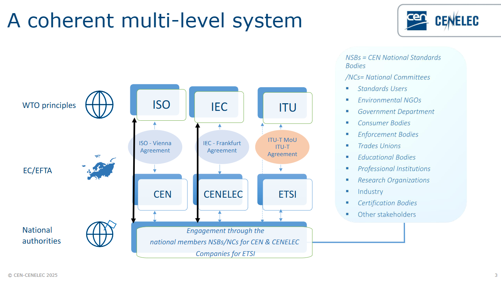

Arca（Industrial Mineralization company）は、2025年10月29日にマイクロソフトとオフテイク契約を締結し、10年間で約30万トンの 耐久性のある二酸化炭素除去（CDR） を提供することを発表しました。
Arcaのソリューションである産業鉱物化は、鉱業や製鉄などの既存の産業インフラとアルカリ性廃棄物の流れを再利用し、大気中のCO2を安定した炭酸塩鉱物として永久的に貯留する技術です。この契約は、Arcaの技術の商業化と市場への展開において重要な節目となります。
Arcaは、以前にもカナダ天然資源省（NRCan）のエネルギーイノベーションプログラムから183万ドルの支援を受けており、今回のプロジェクト（ブリティッシュコロンビア州を拠点）にも資金が投じられています。NRCanはこの契約を「カナダ製のソリューションを推進し、CO2除去・貯留を恒久的に行う」ものとして歓迎しており、この合意は大規模な耐久性CDR市場の成長をさらに加速させるものと期待されています。
Arca、マイクロソフトとCO₂除去30万トンの長期契約を締結
「英国の科学誌「ネイチャー」が近日発表した新研究によると、気候変動の影響で南極の棚氷の約6割が2300年までに安定を維持することができなくなる可能性があることが明らかになりました。
南極氷床の縁にある浮遊棚氷は、氷が海洋に流入するのを抑制しており、その融解は海面上昇の加速につながるとされます。上記の研究を主導したフランスの研究者によると、世界の温室効果ガス排出量が現在の水準を維持すれば、2150年までに約41%の棚氷が安定を保てず、2300年までにはその割合がさらに59%に達する可能性があります。そうすれば、世界の海面が10メートル上昇する恐れがあります。しかし、地球温暖化を2度以内に抑えることができれば、ほとんどの棚氷は安定を保ち、海面上昇のリスクを効果的に低減できるとのことで」
「国立環境研究所と筑波大学の研究チームは、全国の詳細な暑熱環境の予測に基づき、将来の熱中症リスクと、エアコンを用いた対策の費用対便益を評価しました。その結果、熱中症の「リスク高齢人口」（高い暑熱下に存在する高齢人口）が、2060～2080年代には全国で3000万人以上（国内総人口の約3割）となり、多くの自治体で人口の4割以上を占めると予測されました。また、エアコンと電気代の支給でリスク高齢人口を支援する場合、年間約250億円の費用が必要となり、費用対便益は将来世代の健康にどの程度重きを置くかによって大きく異なりました。本研究で予測した熱中症リスクの分布を踏まえて、高齢者をはじめとする多くの方が暑さを避けられる環境を、将来に向けて戦略的に充実させていくことが重要と考えられます。
本研究の成果は、Elsevier社から刊行される国際学術誌『Environmental Research』に2025年10月5日付で掲載されました。」
サブサハラアフリカでは、従来の集中型送電網開発戦略が農村部への高コストのため機能せず、6億人が無電化状態にあります。しかし、過去45年間で太陽光パネルの価格が99.5%減少し、家庭用システムが小規模農家でも購入可能な価格帯にまで下落したことが、革命の引き金となりました。
さらに、ケニア発の モバイル送金システム「M-PESA」の普及が、低コストな少額決済を可能にし、「Pay-As-You-Go（PAYG）」 という革新的な販売モデルを生み出しました。このPAYGモデルは、頭金と30カ月程度の月額支払いで太陽光発電システムをユーザー所有とするもので、支払いが滞ると遠隔で電源を切る仕組みを持ちます。
Sun Kingや、太陽光発電式灌漑ポンプを提供するSunCultureなどのスタートアップがこのモデルを採用し、数千万人の顧客にサービスを普及させています。SunCultureのポンプは農家の収入を大幅に増加させるだけでなく、ディーゼル燃料の代替により年間13万6000トンのCO2削減に貢献し、カーボンクレジットによる新たな収入源も生み出しています。Climate Driftは、これを分散型・民間主導・競争市場という21世紀のインフラモデルへの移行であると指摘しています。
Gaia-Xは、「デジタルエコシステムの実践」をテーマに、2025年11月20〜21日にポルトガル・ポルトでサミットを開催します。このイベントは、信頼性、相互運用性、イノベーションが欧州全体で透明性、責任ある、主権的なAIを可能にするデータスペースを強化する、実運用段階のデジタルエコシステムの基盤であることを示すことが目的です。
主なハイライトは、Gaia-X Trust Framework 3.0「Danube」リリースの発表です。これは、コンプライアンスと相互運用性の自動化を可能にする拡張性メカニズムを導入し、セクターや地域を越えたスケーラブルな連合型デジタルエコシステムへの決定的な一歩となります。
サミットでは、エアバスのキャサリン・ジェスティン会長、ポルトガルのベルナルド・コレイア・デジタル化担当国務長官、ドイツのトーマス・ヤルツォムベク国務次官などが講演します。参加者は、技術、経済、パートナーの3つのテーマ別シアターで、データスペースプロジェクトや経済モデルの評価、オープンソースイノベーションなどについて深く掘り下げることができ、デジタル主権と競争力強化に向けた取り組みを推進します。
Industrial Digital Twin Association (IDTA)は、2025年11月にニュルンベルクで開催されるSPS – Smart Production Solutionsにおいて、Asset Administration Shell (AAS)を標準としたデジタルツインの具体的付加価値を業界パートナーと共同でデモンストレーションします。AASは、バリューチェーン全体で構造化・相互運用可能なデータ交換を可能にするための重要な要素です。
今回、AASの取り扱いと製品関連データの交換を大幅に容易にする集中型サービス**「Asset Data eXchange Hub (ADX Hub)」**を初公開します。ADX Hubは、データプロバイダーとユーザーに対し、中央で標準に準拠した接点を提供することで、非効率なデータ統合の問題を解決します。
デモンストレーションでは、AASがOPC UA仕様と連携する共通メタモデルの実装や、Manufacturing-Xイニシアティブにおける基本的データ構造としての役割、Product Change Notifications (PCN)での活用など、実践的なユースケースを紹介します。これらの実演を通じて、AASが技術的相互運用性を担保し、安全で接続されたデータエコシステムを構築する上で不可欠であることを示し、その産業的成熟度を強調します。10社の共同出展者も個別のAASソリューションを展示予定です。
EUと日本は、DFFT（信頼性のある自由なデータ流通）の実現に向け、越境データ利用を加速させるための具体的な施策にコミットしました。主要な推進策は、EUによる日本の適格性認定を学術、研究、公共部門に拡大すること、EU–日本デジタル・パートナーシップの下でのデータガバナンスの連携、そしてデジタルIDおよびトラストサービスに関する覚書を通じた相互運用可能な学術資格情報パイロットの実行です。
既存のモビリティ、製造、ヘルス分野のデータスペースについては、次のステップとして日欧間の相互運用性を確立するため、アクセス制御、使用ポリシー、データ来歴の整合を目指します。また、データ政策は、サプライチェーンの強靭化、AI・半導体・量子技術の標準化、海底ケーブルのセキュリティといった広範な課題にも関連付けられています。
民間部門は、共通のデータ保護フレームワーク、厳格な相互運用性、中立的なデータ仲介サービスの必要性を強く求めています。長期的には、OECDやG7での協調を通じてDFFTを一貫したグローバルな慣行へと転換し、データスペースを信頼性の高いスケーラブルなネットワークへ発展させることを目指します。
ENGIEは、Appleとの間で15年間の再生可能エネルギー購入契約（PPA）を締結し、イタリアでのグリーンエネルギーポートフォリオを強化します。この契約に基づき、ENGIEはイタリア南部に風力発電所2基（74 MW）、風力リパワリング1基（11 MW）、営農型太陽光発電所2基（88 MW）の合計173 MWの設備を新設します。これらの設備はすべて認可済みで、2026年から2027年にかけて稼働予定です。
年間発電量は400 GWhを超え、その80%がAppleに供給されます。これにより、年間16万トン以上のCO₂排出が回避される見込みです。ENGIEは、PPAを脱炭素化を支援する主要な手段と位置づけており、企業に安定したエネルギー価格と市場変動リスクの低減を提供しています。このプロジェクトは、ENGIEがイタリアで掲げる2030年までに1.6 GWの設備容量達成を目指す開発計画の一部であり、同社のグローバルなPPA市場における主導的な役割を裏付けています。
イタリアで再エネ拡大 ENGIE、Appleと最長15年のPPA締結
BMWグループオーストラリアは、持続可能な電動モビリティを推進するため、ビクトリア州のリサイクル業者EcoBattと提携し、BMWおよびMiniの高電圧リチウムイオンバッテリーを対象とした国内リサイクルプログラムを開始しました。この取り組みは、使用済みまたは損傷したEVバッテリーを安全かつ国内で処理し、環境リスクの低減と海外依存の解消を目指すものです。
リサイクルプロセスでは、EcoBattが世界で初めて開設したBIDS（Battery-in-Device Shredding）施設を活用します。この施設では、バッテリーは安全に放電され、その際に回収されたエネルギーが施設運営に再利用されます。その後、バッテリーは機械的に破砕され、リチウム、コバルト、ニッケルなどの有価材料を含むブラックマスとして回収されます。最終的に、このブラックマスから抽出された鉱物が新しいバッテリーの製造に再利用され、90%以上の材料が回収される循環型サプライチェーンを確立します。このプロセスは、成長するオーストラリアのEV産業にとって持続可能な材料供給源となります。
Ciscoは、スイッチ、ルーター、サーバーシステムを含む全新規製品およびパッケージに、25のサーキュラーデザイン原則を適用し、100%の達成を公式に確認しました。この成果は、2025年ロイターグローバルサステナビリティ賞を受賞した6年間のプログラムの集大成です。
Ciscoのサーキュラーモデルは、ハードウェアの再利用、修理、リサイクルを優先し、モジュール性と長期的な使用可能性を設計に組み込みます。全新規データセンター製品は、発売前に同社のCircular Design Evaluation Toolで75%以上のスコアを獲得することが必須とされています。これにより、持続可能な材料、修理可能性、リサイクル可能性などが評価されます。
具体的な成果として、主力製品であるCatalyst 9000スイッチラインでは、石油系塗料を廃止したことで、3,400トン相当のCO₂排出量を削減し、900万米ドルの生産コストを削減しました。また、Webex Room Barでは55%の再生プラスチックを採用しています。
この戦略は、AIやエッジコンピューティングによるデータセンター需要の急増に対応し、新規材料への依存を減らしつつ、システムの寿命を延ばすことで、コスト削減と持続可能性目標の両立を顧客に提供するものです。
ハイデラバードを拠点とするBlack Gold Recycling（サーキュラーエコノミースタートアップ）は、リバースサプライチェーン管理とエレクトロニクスライフサイクルソリューションの世界的企業である香港・米国に拠点を置くLi Tong Groupのインド子会社Reteck Envirotech Pvt. Ltd.の過半数株式を取得しました。この戦略的買収は、Black Gold Recyclingがインドで技術主導でスケーラブルなサーキュラーエコノミー・プラットフォームを構築する上で大きな一歩となります。Reteck Envirotechのグローバルな運営ノウハウとBlack Gold Recyclingのイノベーション主導の回収モデルを組み合わせることで、リチウムイオン電池、プラスチック、太陽光パネル、および使用済み電子機器のリサイクルソリューションを拡大することを目指しています。
取引の一環として、Reteck EnvirotechのCEOであるPankaj Tirmanwar氏はBlack Gold Recyclingの共同設立者および取締役に就任し、同社のインド全土での事業展開に貢献します。この統合は、インドにおけるE-waste管理と資源回収のための、より強力で責任あるエコシステムを構築し、同国の持続可能なリバースサプライチェーンの重要なプレーヤーとしてのBlack Gold Recyclingの地位を確立します。
このカタログには、マレーシアの国家エネルギーロードマップ（NETR）で指定された6分野10基幹事業に沿った、合計51社の製品やサービスが掲載されています 。
EU理事会（閣僚理事会）は11月5日、温室効果ガス（GHG）排出削減に関する2040年目標を設定するための欧州気候法改正案の立場（修正案）を採択しました。欧州委員会が提案した「1990年比90%削減」の大枠を維持しつつ、理事会案は域内産業の競争力強化に配慮し、柔軟な措置を導入しました。
その中心が域外カーボンクレジットの活用で、欧州委案の上限3%から5%に引き上げ、2040年目標達成への算入方針を明確化。これにより、EU域内のGHG排出削減目標は実質85%相当に引き下げられました。加盟国ごとの目標でも最大5%の域外クレジット算入が認められます。
さらに、内燃機関車の販売禁止を巡る動きを背景に、道路輸送の脱炭素化において、低炭素燃料の役割を適切に反映させる規定を欧州委に義務付けました。また、欧州気候法の見直しにおいては、域内産業の競争力やエネルギー価格の考慮を明文化。EU ETS II（ガソリン車・暖房対象）の開始時期を2028年に1年延期すること、そしてETSの無償排出枠の削減をより緩やかに実施すべきとの文言も盛り込まれました。今後は欧州議会との交渉を経て最終的な合意を目指します。
欧州工作機械工業連盟（CECIMO）や欧州風力協会など、機械、電気・電子、エネルギー関連の13のEU産業団体は10月30日、欧州委員会が提案した2040年GHG排出90%削減目標の早期採択を支持する共同声明を発表しました。
彼らは、この野心的な目標が、2050年の気候中立実現に向けた予見可能な長期的な規制枠組みの土台となり、関連投資の呼び込み、産業競争力強化、そして化石燃料の輸入依存低減に貢献すると評価。COP30開催前の採択が重要であると主張しました。
一方で、目標設定を巡りEU加盟国間で競争力低下への懸念から合意が先送りされている現状を踏まえ、13団体は90%削減が経済的に容易ではないことを認めつつも、達成は可能であると述べました。その条件として、「域内産業の強化なくして、クリーンへの移行は不可能」と訴え、EUに対しエネルギー価格の引き下げやEU域内生産の維持策、規制の簡素化を最優先で実施し、産業競争力を早急に強化するよう要請しました。声明は、気候中立目標を「気候変動対策」か「競争力強化」の二者択一ではなく、両方を同時に追求することで、GHG排出削減と域内クリーン産業振興の両立を実現できると強調しています。
本イニシアチブは、EUタクソノミーの気候・環境委任法（2021年・2023年採択）に定められた技術的スクリーニング基準の見直しと改正を目指しています 。これは、法的な義務であるとともに、基準の複雑さや適用上の困難さ、不整合、法的不確実性に関するステークホルダーの懸念（特に「著しい損害を与えない（Do No Significant Harm）」基準）への政治的対応です 。問題は、企業の管理負担とコストの増加、持続可能な投資への意欲低下につながっています 。
イニシアチブの目的は、基準の明確性、実用性、法的確実性、費用対効果を向上させることです 。具体的な手段として、基準の明確化、関連EU法との整合、不必要な複雑さの排除などが検討されています 。これにより、企業のコンプライアンスが容易になり、グリーン投資へのアクセスが促進されることが期待されます 。採択は2026年第2四半期に予定されており、影響評価は行わず、ターゲットを絞った技術的調整に限定されます 。
本イニシアチブは、EUタクソノミーの気候・環境委任法（2021年・2023年採択）に規定された技術的スクリーニング基準の改正と見直しを目指しています 。これは、タクソノミー規則に基づく定期的見直し義務と、基準が複雑で実務での適用が困難であるというステークホルダーからの懸念（特に「著しい損害を与えない（DNSH）」基準の明確性不足や複雑さ）への政治的対応です 。
この問題は、企業の管理負担とコストを増加させ、持続可能な投資への意欲を低下させるリスクがあります 。イニシアチブの目標は、基準の明確性、実用性、法的確実性、費用対効果を向上させることです 。具体的な手段として、基準の明確化、関連EU法との整合、不必要な複雑さの排除など、ターゲットを絞った技術的調整が検討されています 。これにより、企業のコンプライアンスが容易になり、グリーン投資へのアクセスが促進されることで、EUの持続可能な金融フレームワークが強化されることが期待されます 。採択は2026年第2四半期に予定されています 。
本欧州委員会委任規則案は、Regulation (EU) 2018/858の附属書Xを改正し、車両OBD情報および修理・整備情報（RMI）への独立系事業者によるアクセスに関する要件を大幅に更新する。 改正の主目的は、既存の法的枠組みの下で車両メーカーがサイバーセキュリティ（Regulation (EU) 2019/2144など）を理由にOBDアクセスを効果的に保護できないという課題を解決するため、セキュリティ対策のための新たな条件と手順（Appendix 4）を規定し、安全なアクセスを確保することである 。 技術進歩への対応として、EVのトラクションバッテリーシステムの診断・修理情報や、ADAS/ADS/DCAS（先進運転支援システム等）の校正・修理情報など、RMIの項目を明確化・拡充した 。アクセス手段については、標準データリンクコネクタに加え、Ethernet、API、無線LANを含む車内データストリームへの双方向アクセスを義務付けた 。さらに、独立系事業者が非独自ハードウェアで制御ユニットの再プログラミングやバリアントコーディングを行えるよう、車両メーカーにソフトウェア/APIや必要な技術情報の提供を義務付け、EV等の修理可能性の向上とコスト削減を目指す 。
Responsible Business Alliance (RBA)は、サプライチェーンの透明性向上と複雑化する規制への対応のため、国連透明性プロトコル（UNTP）とW3C検証可能クレデンシャルに基づいて構築されたResponsible Business Transparency Protocol (RBTP)の大規模なパイロット運用を開始した。RBTPは、従来の文書に代わりデジタルクレデンシャルを発行することで、データ所有者が共有範囲を制御しつつ、自動車、エレクトロニクス、関連セクター間での検証可能、ポータブル、相互運用可能なデータ交換を実現し、n層トレーサビリティの基盤を築く。パイロットでは、銅、コバルト、リチウム、タンタルといった重要鉱物を対象に、上流生産者、下流購入者、標準化団体、政府機関を含む20以上の多様な組織が参加し、実世界での複雑な課題（欠損データの処理、監査基準の相互運用性、デューデリジェンス認証の検証等）に対するプロトコルの有効性と拡張性を実証し、実装コストや労力に関する定量的な知見を得ることを目指す。
主要項目
本ロードマップは、2025年G7サミットで策定された重要鉱物行動計画に基づき、投資を減退させ依存を生む非市場的政策・慣行が支配する重要鉱物サプライチェーンから脱却し、透明性、多様化、セキュリティ、持続可能性の原則に則った強靭な市場を構築することを目指す。
具体的なコミットメントは3点。
本ロードマップは、オーストラリアとウクライナからも支持されている。
2025/10/07に開催されたCatena-X認定PCF計算アプリ（SAP, Siemens, iPoint, Glassdome, Kartmi）の機能とCatena-Xエコシステムにおける役割を紹介するピッチセッションの情報です。
Catena-Xは、自動車産業における製品カーボンフットプリント（PCF）計算に関するガバナンスとルールブックを確立し、サプライチェーン全体でのデータ交換と信頼性向上を目指すエコシステムを推進しています。本ピッチセッションでは、Catena-Xの標準に準拠し認定を受けた5社のPCF計算アプリケーションが紹介されました。
2025/10/08に開催されたCatena-XとTfSが、自動車・化学サプライチェーンでのPCFデータ信頼性向上を目的とした「PCF検証・プログラム認証フレームワークV2.0」の共同リリースに関するセミナーの情報です。
自動車産業のCatena-XとTfSが共同で開発したPCF検証・プログラム認証フレームワークがバージョン2に更新されました。これは、サプライチェーンにおける製品カーボンフットプリント (PCF) の信頼性向上を目的としたものです。
主な変更点は、検証者・認証者の任命プロセスの明確化、PCFプログラム認証（信頼レベル2）の基準明確化、プロスペクティブPCFの信頼レベル2への組み込みなどが挙げられます。また、プロダクト検証シェア (PVS) の計算ガイダンスも強化されました。Q&Aでは、PCF値の比較可能性を高めるため、ISO基準を補完するより具体的なガイドラインの必要性や、C-Greenなどのデジタルツールを活用しEメールでのデータ共有を避けるべきことが強調されました。
主要項目
世界持続可能開発のための経済人会議（WBCSD）は、企業主導でバリューチェーン全体の脱炭素化を大規模に推進する新たなプラットフォーム「Emissions Reduction Accelerator（ERA）」をCOP30に先駆けて発表した。これは、2030年までに世界の排出ギャップを埋めるための決定的な行動を加速することが目的だ。WBCSD会員とそのバリューチェーンは世界の温室効果ガス排出量の約4分の1を占め、その大部分（約89%）がScope 3排出量であるため、ERAはバリューチェーンの集団的行動に焦点を当てる。これにより、運用コストの低減、サプライチェーンの耐性向上、新規市場の開拓といった具体的な事業上のメリットが期待される。初期の旗艦パイロットとして、農業・食料バリューチェーンにおけるグリーン肥料などを活用した排出量削減、および建設環境におけるネットゼロの既設商業用不動産資産の供給と需要への対応の2つの高インパクト領域に取り組む。WBCSDは、すべての企業にERAへの参加を呼びかけ、データ、標準、AIなどの活用を通じた変革を訴えている。
経済産業省資源エネルギー庁は、2026年度夏季の需給見通し（速報値）として、 東京エリアの最小予備率が安定供給の目安3%を大幅に下回る0.9% にとどまる「極めて厳しい」状況を報告しました。これは、複数の大型火力発電所の補修停止や休止による供給力約256万kWの減少と、気温上昇・経済活動増加による需要約125万kWの増加が重なり、需給バランスが約400万kW悪化するためです。資源エネルギー庁は、最低限の予備率3%確保のため、約120万kW分の追加供給力を公募するなど、速やかな対策を講じる方針です。 また、2025年度冬季は全エリアで予備率3%は確保できる見通しですが、一部地域で4%台と依然として厳しく、LNG在庫も過去平均を下回っています。中長期的には、老朽化設備や非効率火力の休廃止が進む一方、長期脱炭素電源の稼働が2029年以降となるため、数年間は高需要期の需給逼迫が続く可能性があります。政府は、原子力発電所の再稼働や主要連系線の増強といった構造的課題への対応を推進するとしています。
金融庁は、プライム市場上場企業を対象に、サステナビリティ基準委員会（SSBJ）が策定した開示基準を有価証券報告書に組み込む形で、サステナビリティ情報の開示と第三者保証を義務化する実施計画を提示しました。適用は企業規模に応じて段階的に行われ、時価総額3兆円以上の企業は2027年3月期から、1兆円以上3兆円未満は2028年3月期から、5,000億円以上1兆円未満は2029年3月期から開始されます。 導入後2年間は「二段階提出」が認められますが、適用翌期からは第三者保証が義務となり、限定的保証として初期2年間はScope1・Scope2排出量、ガバナンス、リスク管理に焦点が絞られます。保証を行う主体は監査法人に限定されず、国際基準と整合した品質管理体制などを備えた登録制の事業者に求められます。提出期限は現行と同様「事業年度終了後3か月以内」とする方針です。この制度は、資本市場における情報の信頼性向上と、企業のサステナビリティ対応を経営プロセスに統合することを目的としています。
HEINEKEN N.V.は、EDP Comercial（EDPC）およびRondo Energyと協業し、リスボン近郊のヴィアロンガビール工場・製麦プラントに100MWhのRondo蓄熱式ヒートバッテリー（RHB）を導入します。これは、欧州の飲料業界では初となる大規模な蓄熱技術の活用であり、HEINEKENの再生可能エネルギーへの移行を象徴するものです。 2027年4月の稼働を目指すこのシステムは、7MWのオンサイト太陽光発電と長期的な系統からの再生可能電力契約を電力源とします。ヒートバッテリーは再生可能電力を貯蔵し、工場操業に必要な蒸気に変換します。EDPCが設計、建設、運用を担う Heat-as-a-Service（HaaS） モデルを採用することで、HEINEKENは設備を保有・運用せずに低炭素な蒸気供給を受けます。このプロジェクトは、CO2排出量削減に加え、エネルギー価格の安定化とエネルギーレジリエンス強化に貢献し、食品・飲料などのエネルギー多消費産業における脱炭素化の再現可能なモデルとなることが期待されています。
ポルトガルで飲料業界最大級の熱蓄電システム導入へ―HEINEKEN、EDP、Rondoが共同推進
近年、「サブスクリプション」や「レンタル」など家電の買い方の幅が広がる中、メーカーが故障品などを修理・清掃し再販する「リファービッシュ品」（整備済み製品/再生品）が注目されています。リファービッシュ品は、中古品をそのまま再販する「リユース品」や「リサイクル品」と異なり、メーカーが分解修理や部品交換、新品並みの徹底清掃を行い、新たに保証を付けて再出荷するため、安心して購入できる点が特徴です。 パナソニックは、栃木県の宇都宮工場でテレビや洗濯機などをオーバーホールし、傷の修理や回路基板の部品交換まで行うリファービッシュを推進しています。一方、茨城県の工場では「素材としてのリサイクル」を実施し、廃家電から鉄、銅、樹脂などを分離再生しています。特にエアコンの冷媒ガス回収においては、メーカー・モデルごとに異なる接続箇所をカメラで判別し、ロボットアームで回収する日本初の自動化ラインを試験的に導入しています。パナソニックはこれらリファービッシュとリサイクルの両面から設計へのフィードバックも行い、「サーキュラーエコノミー」の実現と「GREEN IMPACT」の取り組みを強化しています。
日本GLPは、物流業界が抱えるドライバー不足やコスト高騰、そして企業のESG貢献という課題に対応するため、「GLPサーキュラーエコノミー」を本格的に始動しました。これは、同社がハブとなり、強力なパートナー企業（例：株式会社shizai）との協働を通じて、物流現場から出る段ボール、ストレッチフィルム、PPバンドなどの廃棄物を共同回収し、静脈物流を最適化する取り組みです。 具体的な手法として、パートナー企業が複数のサプライヤーを巡回して集荷するミルクラン方式を採用。これにより、カスタマーが個別回収を依頼するよりも高額での段ボール買い取りを実現するほか、通常は廃棄料が発生するストレッチフィルムやPPバンドなども有価物として買い取り、廃棄コストを削減し収益化につなげます。日本GLPは、この取り組みにより、地球環境への負荷低減を図ると同時に、入居カスタマーの事業発展とESGへの貢献をサポートできると期待しています。
主要項目
日本GLP、静脈物流を最適化する「GLPサーキュラーエコノミー」を開始。トレファクらと連携し廃棄物を収益化へ
Global Impact Coalition（GIC）は2025年9月23日、ETH Zurich（スイス連邦工科大学チューリッヒ校）の研究チームと協力し、廃棄物を化学原料（ケミカル・フィードストック）へ変換する技術を研究開発する協業プロジェクトを開始しました。このR&Dは、 サーキュラーエコノミー（循環型経済） の実現を目指すGICの取り組みの中で極めて重要であり、廃棄物の効率的な再利用と価値向上を図るものです。 GICは、低炭素社会の達成を目標に、世界的な化学メーカーなど複数の企業が参加するイニシアティブであり、既に欧州で使用済み自動車の廃プラスチックリサイクルプロジェクトなどの実証実験を進めています。今回のETH Zurichとの提携は、学術的な知見と産業界の実践力を結集させ、ケミカル・リサイクル技術の革新を加速させることを目的としています。これにより、GICは廃棄物管理と資源循環における新たなソリューションの確立を目指します。
ISOとGHGプロトコルは、GHG排出量算定におけるグローバルな統一性を実現するため、製品レベルのGHG会計標準を共同で開発する合同作業部会（JWG）を正式に立ち上げました。このJWGは、ISOの既存作業部会（TC 207/SC 7/WG 8）を拡大する形で運営され、両組織の専門的知見を結集します。新標準は、ISO 14067とGHGプロトコル製品ライフサイクル標準を基礎としつつ、企業、投資家、規制当局の変化するニーズに応える実用的で統一されたグローバル手法の確立を目指します。 この共同標準の主要な目的は、バリューチェーン全体での粒度の高い排出量データを提供することであり、これにより信頼できる脱炭素戦略の策定、市場の透明性強化、そして炭素国境調整メカニズム（CBAMs）などのメカニズムの実装を可能にします。ISO事務総長とGHGプロトコル運営委員会委員長は、この協業が気候変動対策と市場の信頼強化に貢献すると強調しています。GHGプロトコルは現在、製品レベルGHG会計やライフサイクルアセスメントに関する技術的知識を持つ専門家を11月30日まで募集しています。
帝人フロンティア、倉敷紡績、RITE、東レ、日清紡テキスタイル、日本毛織の6社は、NEDOの「バイオものづくり革命推進事業」採択を機に、「Consortium for Fiber to Fiber（CFT2）」を設立しました。このコンソーシアムの目標は、環境負荷が問題視されている廃棄衣料品を再資源化し、「繊維to繊維」の資源循環（サーキュラーエコノミー）システムを世界に先駆けて構築することです。 CFT2は、再資源化が困難だった複合繊維素材の廃棄衣料品を主要な未利用資源として捉え、酵素による選択的分離や微生物を用いた繊維原料へのバイオリサイクル技術の開発・実証に取り組みます。さらに、参加する繊維企業5社が持つメカニカル・ケミカルリサイクル技術も活用し、天然繊維と合成繊維の双方に対応するリサイクルシステムの確立を目指します。RITEは産業用酵素・微生物開発プラットフォームの構築を、繊維5社は選別技術や再資源化技術を担当し、共同で社会実装のための評価手法の検討も進めます。
酵素や微生物で複合繊維をリサイクル。帝人フロンティア、東レなど6者がバイオリサイクル技術開発で新コンソーシアム設立
北欧のポジション・グリーンは、サステナビリティ基盤の統合管理を目指す市場統合戦略の一環として、サプライチェーン透明性と人権デューデリジェンスに強みを持つファクトラインズを買収しました。この買収により、ファクトラインズの200社以上の顧客が加わり、ポジション・グリーンの合計利用企業は1,000社を超え、欧州でも最大級のサステナビリティ技術プラットフォームが誕生します。 ファクトラインズの技術は、サプライヤー全体にわたるESGリスクの特定・評価・対応を可能にし、特にノルウェー透明法、EUDR、CSDDD（企業持続可能性デューデリジェンス指令）など、欧州の主要なサプライチェーン関連規制への企業のコンプライアンス対応を強力に支援します。この統合により、両社は企業のバリューチェーン全体の影響管理と責任ある調達を広範囲でサポートします。また、長年エネルギー転換分野で投資を行うアレンダルス・フォッセコンパニがポジション・グリーンの新たな株主として加わりました。
人的資本データプロバイダーのDenominatorは、ジェンダー平等と多様性データで先駆的なEquileapを買収し、人的資本インテリジェンスの提供能力を大幅に拡張しました。この統合により、DenominatorのシステムはEquileapの優れたジェンダーデータセットを取り込み、対象企業を550万社の公開・非公開企業に拡大し、従業員の多様性、労働慣行、離職率など1,800以上の独自のデータポイントを提供します。 統合プラットフォームは、データ深度とグローバル規模、透明性、AI活用による洞察をコアな強みとし、既存のクライアントに対しデータの一貫性と完全な透明性を維持します。このスケールアップにより、両社は世界の20大アセットマネージャーの50%以上にサービスを提供可能となり、人的資本と財務実績を結びつけるインテリジェンスを、投資戦略、サプライチェーンリスク分析、企業ベンチマークといった幅広い分野で提供し、ESGデューデリジェンスの高度化を促進します。EquileapのCEOはDenominatorのChief Commercial Officerに就任し、プラットフォームのグローバル成長を主導します。
人材データの新たな世界標準へ デノミネーターがエクリリープを買収
WBCSDとUNEPのOne Planet Networkは、COP30（2025年11月11日）にて、「Global Circularity Protocol for business (GCP)」を世界に向けて公式に発表しました。GCPは、科学ベースでグローバルに調和された、企業向けの自主的な枠組みであり、企業がバリューチェーン全体にわたる循環性のパフォーマンスとインパクトを、統一された指標で測定・管理・伝達できるように設計されています。 このプロトコルは、線形モデルから脱却し、廃棄物や排出量を削減し、企業と地球双方に価値を生み出すための実用的かつ標準化されたステップを提供します。WBCSDの分析によると、GCPの広範な採用により、2050年までに最大1200億トンの材料節約と76ギガトンのCO₂排出回避という環境面での大きな効果が見込まれています。GCPは、規制やステークホルダーの期待に応える信頼性・比較可能性のある報告を可能にする「ゲームチェンジャー」として、企業に対し、循環への取り組みを測定可能なビジネスインパクトに変えるための明確なロードマップを提供します。
「ビジネスのためのグローバル循環プロトコル（GCP）」の 初版の公表について | 報道発表資料 | 環境省
GHGプロトコルと国際標準化機構（ISO）は、ブラジル・ベレンで発表されたCOP30行動アジェンダを歓迎し、カーボンアカウンティングソリューションを加速するための「調和されたグローバルカーボンアカウンティング基準のためのソリューション加速化計画（PaS）」を公表しました。この計画は、企業、製品、プロジェクトレベルで存在する調和されていない、相互運用性のない基準という、迅速な脱炭素化を妨げる重大な障壁を取り除くことを目的としています。両組織は、長年の役割を活かし、2028年までに、調和の取れた排出量報告、機能的なカーボンマーケット、相互運用可能な規制に必要となる基準インフラを確立することを目指します。これにより、世界中の産業界の排出量測定・検証・削減の基盤が整備され、2030年までの排出量削減加速化に貢献することが期待されます。主な焦点は、脱炭素化を支援する一貫した国際基準群と、製品・エンティティ・プロジェクト全体で一貫し比較可能な枠組みの構築です。
主要項目
欧州委員会は、加盟国がパリ協定に基づく 野心的な新たな国別削減目標（NDC） に合意したことを歓迎しています。この新しいNDCは、2035年までに温室効果ガス（GHG）排出量を1990年比で66.25～72.5%純減するというもので、これは2040年までに90%純減、2050年までに気候中立を達成するための重要な中間目標です。このNDCは、ブラジルで開催されるUN気候変動会議（COP30）に向けて、EUがパリ協定の目標達成と世界的な排出削減に強固なコミットメントを示すものです。
さらに、加盟国は2040年EU気候目標についても、国内で85%、国際炭素クレジットで最大5%を含む90%削減という法的拘束力のある目標で概ね合意しました。委員会は、この提案の本質を維持しつつ、欧州議会との迅速な合意を支援する用意があります。この目標達成に向け、クリーン産業協定（Clean Industrial Deal）の完全な実施を含む、経済的・地政学的現実を反映した実用的で柔軟な道筋が示されています。EUは、新しいNDCと進んだ2040年目標の議論をもってCOP30に臨み、気候変動へのコミットメントを国内外で実行し続けるという明確なメッセージを発信します。
Inter IKEA Groupは、以前発表した1億ユーロの気候変動対策（炭素の除去・貯留）コミットメントの一環として、ブラジルの大西洋岸森林バイオームにおいて先駆的な森林投資プロジェクトを開始しました。これは、世界で最も危機に瀕した生態系の一つである同地域内のパラナ州とサンタカタリーナ州で、約4,000ヘクタールの荒廃した牧草地を対象に、BTG Pactual Timberland Investment Group (TIG)と提携して森林の保護、回復、責任ある管理を行うものです。
このプロジェクトの目的は、生産的な林業と環境保全が両立し、炭素を捕捉・貯留することで気候変動緩和に貢献する拡張可能なモデルを実証することにあります。対象地の大部分は自然林の回復のために保護され、残りはFSC™認証を目指す商業用マツ林などに利用されます。この活動は、地域コミュニティに雇用機会をもたらすとともに、IKEAが目指す2050年までのネットゼロ排出目標を支援するものです。プロジェクト期間中、炭素吸収量や生物多様性への影響は継続的に測定・独立検証されます。
IKEA、ブラジルで森林再生プロジェクト開始 1億ユーロの気候対策投資の一環
Googleは、地球の自然なCO2除去能力を加速させるため、ブラジルを拠点とするMombak社と新たな二酸化炭素（CO2）除去契約を締結しました。Mombakは、アマゾンの荒廃した土地に原生の、生物多様性に富む森林を植えることで土地を再生しています。Googleが今回購入するCO2除去量は20万トンで、これは昨年締結した最初の契約の4倍の規模にあたります。
Mombakのアプローチは、気候への利益と生態系の回復を最大化するために、科学的な厳密さと産業規模の運用のバランスをとっています。Googleは支援を拡大するだけでなく、Google DeepMindのPerch AIを使用して、植林による生物多様性への効果を定量的に測定する予定です。Mombakは、そのCO2除去の測定における信頼性の高いアプローチが独立した専門家によって承認されており、Symbiosis Coalitionによって選定された最初のプロジェクトです。Googleは、このプロジェクトの影響について透明性をもって報告し、必要に応じてクレジットの有効期限切れの際に代替を計画しています。
グーグル、ブラジル企業モンバックと新たなCO₂除去契約を締結
ICMAは、2025年11月の更新版で「クライメート・トランジション・ボンド・ガイドライン（CTBG）」を発表し、クライメート・トランジション・ボンド（CTB）を使途特定型債券のスタンドアローン・ラベルとして正式に導入しました。この目的は、高排出部門（例：化石燃料、脱炭素化困難な部門）からの排出削減の課題に対処し、パリ協定の目標達成に不可欠なプロジェクトの（再）融資を支援することです。
CTBの資金使途は、GHG排出量の実質的かつ定量化可能な回避、削減、または除去につながるCTプロジェクトに充当されます。CTプロジェクトは、グリーンボンド原則（GBP）の範囲を補完し、超えるものです。
発行体は、CTプロジェクトの健全性を確保するため、以下の5つのセーフガードを満たすか、満たす意図を説明する必要があります:
さらに、ガイドラインは、高排出発行体によるサステナビリティ・リンク・ボンド（SLB）に関する推奨事項も含み、外部レビューの活用や透明性の高い報告を求めています。
ICMA、気候移行債（Climate Transition Bond）ガイドラインを発表
経済産業省の排出量取引制度小委員会（第5回）では、GX-ETSの実務設計に関する主要論点が議論され、制度の具体像が明確になりました。
活動量調整については、過去2年度平均で7.5%以上の変動があった場合に割当基準を見直すものの、法定点検や災害（激甚災害法等適用）による減産は例外とし、「活動量実績×BM水準」で算定する方針が示されました。
制度移行時の公平性を図る勘案事項として、早期削減量には活動量減少分控除のための0.8の補正係数が導入されます。リーケージリスク緩和措置は、排出枠コストが営業利益の4%超で発動し、不足分の50%を追加割当します。また、BM業種とGF業種の負担不均衡を是正するため、2026〜2030年度の5年間、BM水準の算定に特例が設けられます。
対象事業者には、排出削減目標や研究開発方針を含む「移行計画」の毎年度提出・公表が義務付けられ、グループ企業による共同届出も可能です。価格変動対策として、上限価格を設定することで義務履行を可能とし、下限価格はリバースオークションや政府オークション入札価格への設定で需給を引き締める方針が示されました。
証券監督者国際機構（IOSCO）は、「ESGインデックスをベンチマークとして用いる場合に関する最終報告書」を公表し、ESGベンチマークの急速な拡大に伴うグリーンウォッシングリスクへの対処を強化しました。本報告書は、既存の金融ベンチマーク原則（PFB）との比較を通じて、ESGベンチマークの透明性、整合性、信頼性を向上させるための具体的な指針を提供しています。
報告書は、ベンチマークの4本柱（ガバナンス、品質と整合性、方法論、アカウンタビリティ）に基づき、ESG要素の非定量的かつ将来志向的な性質に起因する課題を指摘しています。特に、「擬似ESG」指標やScope 3排出量の不統一などの脆弱性が強調されています。
改善策として、ベンチマーク運営者に対し、以下の徹底を求めています。
IOSCOは、PFBが概ね適用可能であるとしつつも、ESGデータの特性から比例的な適用と追加的考慮が不可欠であり、これらの指針がESG金融市場の信頼性向上に不可欠であると結論付けています。
SBTi（Science Based Targets initiative）は、野心的かつ信頼できる企業の気候変動対策を加速させる旗艦フレームワークである「Corporate Net-Zero Standard」の改訂ドラフトについて、第2次パブリックコンサルテーションを開始しました。この改訂案は、より簡素化され、合理化された構造と革新的なアプローチを導入し、ネットゼロ目標設定を理解しやすく、適用しやすく、部門や地域を超えて規模を拡大できるようにすることを目指しています。主要な改訂案には、「ネットゼロを羅針盤とした緊急行動の重視」や、スコープ別（スコープ1と2の要件維持を含む）の目標設定アプローチ、多様な企業文脈を反映した科学的根拠に基づくオプション、継続的な排出量への自主的早期行動に対する新しい認識メカニズム、そして進捗の測定と開示に関する透明性の明確化が含まれます。SBTiは、企業の気候変動対策の未来を形作るために、専門家や関心を持つすべての人にフィードバックへの参加を奨励しています。
国際研究チームが公表した報告書「グローバル・カーボン・バジェット」は、化石燃料由来の二酸化炭素（CO2）世界排出量が2025年に過去最高となる381億トンを記録する見通しだと発表しました。炭化水素の燃焼やセメント生産、森林伐採などによるCO2排出量を分析した結果、石油、ガス、石炭からの排出量は全て増加する見込みです。
報告書は、ブラジルのベレンで開幕したCOP30に合わせて発表されました。研究を主導したエクセター大学のピエール・フリードリングシュタイン氏は、この排出ペースが続けば、パリ協定で掲げられた産業革命前からの気温上昇を1.5度未満に抑えるための残りの炭素予算1700億トンはわずか4年で消費され、目標達成は事実上不可能だと強く警告しています。一方で、報告書は35か国が経済成長を維持しつつ排出量を削減することに成功した点も指摘しています。
欧州議会は11月13日、CSRDとCSDDDを一部改正するオムニバス法案（A10-0197/2025）を可決し、対象企業を大幅に縮小する方針を打ち出した。CSRDの報告義務は、平均従業員1750人超かつ売上高4.5億ユーロ超の大企業に限定され、ESRSの定性情報削減やセクター別基準の任意化を通じて報告負担の軽減が図られる。CSDDDは、従業員5000人超かつ売上15億ユーロ超の巨大企業に限定され、リスクベースの運用が求められる。特に重要な変更として、移行計画（Transition Plan）の作成義務が削除されたほか、違反時の民事責任は各国法で扱うことが主張されている。大企業が中小企業へ過剰な情報提供を求めることも禁止された。本法案は11月18日の欧州委員会・EU理事会・欧州議会による3者協議を経て最終化される予定であり、今後の動向が注目される。
EU委員会は、製品コンプライアンスを デジタル製品パスポート（DPP） の重要な要素とすべきか、またそれにより市場監視と税関を支援できるかについて、具体的な意見を求めている。検討されている主なテーマは以下の通りである。
これらの問いは、自動化されたコンプライアンスチェックなどを可能にすることで、市場監視と税関の効率と有効性を高めることを目指しており、製品のライフサイクル全体における透明性の向上を目的としている。
Product legislation – ensuring futureproof rules (revision of the New Legislative Framework - NLF)
EU理事会は11月5日、パリ協定に基づく2035年のGHG排出削減目標（NDC）を72.5%（従来の66.25%から強化）とすることを承認した。これは、11月10日から開催されるCOP30を前に、EUの気候変動対策への強いコミットメントを示すものであり、グローバルな気候行動を促す狙いがある。EUは2030年までの再エネ能力3倍化・エネルギー効率倍増の取り組みへの貢献も強調している。
また、欧州委員会はCOP30の首脳級会合で、ブラジル主導の**「開かれた炭素価格制度を目指す有志連合」へのEU参加を表明。EUは2005年導入の排出量取引制度（EU ETS）**で成功を収めており、この経験を共有し、NDC達成に向けた協力と情報交換を行う。
一方、 EUはEU ETSによる排出削減（需要側）を主導するのに対し、中国はクリーン技術の生産・輸出（供給側）を主とし、アプローチが異なっている。 EUは気候変動対策による域内企業負担軽減と競争力強化を模索しており、COP30でのEUの主導的な役割に注目が集まる
国連気候変動枠組み条約第30回締約国会議（COP30）の首脳級会合が、本会議に先立ちブラジル・ベレンで11月6～7日に開催された。議長国ブラジルのルーラ大統領は開会式で、エネルギー移行と自然保全の重要性を訴え、森林保護を目的とした 熱帯林フォーエバー・ファシリティー（TFFF） の提案を正式に発表。これにはノルウェーなどから総額55億ドル超の拠出表明があった。
会合では主に以下の3つのセッションが行われ、複数の宣言が発表された。
その他、コンプライアンス炭素市場の共通基準・ルール策定を模索する 「オープン連合宣言」 （43カ国＋EU署名）や、 「環境的レイシズム撲滅宣言」 も発表され、国際的な気候変動対策への協調が一層進められた。
欧州委員会は11月6日、消費者保護協力ネットワークが誤解を招くと認定した環境訴求表現について、欧州の航空会社21社が変更を約束したと発表した。対象となる表現には、SAF（持続可能な航空燃料）購入やカーボンオフセットが特定のフライトのCO2排出を直接相殺しないことの明確化、曖昧な「グリーン」などの用語の不使用、将来的なネットゼロ主張に対する明確なタイムラインと根拠の提示などが含まれる。これは、グリーンウォッシュを禁止するEUの不公正取引方法指令改正に基づく措置であり、今後、加盟国の消費者保護当局がその実施を監督する。
欧州議会は11月13日、企業のサステナビリティ報告義務とデューデリジェンス（DD）要件の簡素化・軽減を目的とした交渉方針を採択した。この修正案の主な変更点は以下の通りである。
MEPは、全てのEU報告要件に関するテンプレートやガイドラインへ無料でアクセスできる新たなデジタルポータルの設立も求めている。今後は、EU加盟国政府との交渉が11月18日から開始される予定。
欧州議会は、EU気候法の改正に関する交渉方針を採択し、2040年に1990年比で純GHG排出量を90%削減するという、拘束力のある中間目標を設定することを支持した。この目標は、EUの競争力向上とグリーン移行の両立を目指すものであり、目標達成のための柔軟性を高める提案が含まれている。
主な修正点・要求は以下の通りである。
これにより、EUは11月にブラジルで開催されるCOP30での国際的な気候コミットメントを果たすことを目指す。
欧州議会雇用・社会問題委員会は、AIを含むアルゴリズム管理（AM）の職場における利用の透明性、公平性、および安全性を確保するための新たなEU法案に関する提言を採択し、欧州委員会に立法措置を求めた。
主な勧告事項は以下の通りである。
この提案は、企業の競争力と高い社会基準の両立を目指し、行政負担を課すことなく、労使双方に利益をもたらすバランスの取れたものと説明されている。この立法イニシアチブは12月の本会議で投票にかけられる予定。
2025年11月11日、日本政府は日・タイ間の二国間クレジット制度（JCM）において、パリ協定第6条に沿った初のクレジットである国際的に移転される緩和成果（ITMOs）を1,009 tCO2eq分発行しました。これは、10月30日の第7回合同委員会でクレジット発行が決定され、タイ政府の国際移転承認を経て実現したものです。対象事業は、タイにおける5MW水上太陽光発電システム導入で、水上フローティング技術は発電効率向上と用水蒸発抑制に貢献しています。このITMOsは、日本のNDC（国が決定する貢献）達成に適切にカウントされます。初のITMOs発行を記念し、環境省は12月17日にタイでJCMビジネス促進フォーラムおよびビジネスマッチングを共催し、JCMの最新動向の議論や革新的技術、NbSの紹介、企業によるビジネスピッチを通じて、日・タイ間のプロジェクト形成を加速させます
ナイキは、2030年までに事業運営で65%、サプライチェーン全体で30%の炭素排出量削減という目標を掲げており、全カーボンフットプリントの34%を占める原材料への対応を重要視しています。この目標達成に向け、循環型経済のクリーンテック企業であるSyreおよびLoop Industriesと、テキスタイル廃棄物から作られる再生ポリエステルの供給に関する複数年契約を締結しました。
Syreは、テキスタイル・トゥ・テキスタイル再生ポリエステルの主要戦略サプライヤーとなり、数年以内にナイキのコアパフォーマンスラインへの段階的な統合を目指します。この提携は、循環型素材を概念から商業的現実へ移行させる強力なシグナルとなります。
Loop Industriesは、廃PETプラスチックやポリエステル繊維を解重合してバージン品質の再生ポリエステル樹脂（Twist）を製造し、ナイキに供給します。ナイキは、Loopのインドの新製造施設Infinite Loopのアンカー顧客となり、この施設は化石燃料ベースのポリエステルと比較して温室効果ガス排出量を81%削減し、年間最大418,600トンのCO
2排出量を節約する見込みです。これらのパートナーシップは、ナイキの持続可能なソリューションの拡大と製品の卓越性を両立させるコミットメントを体現しています。
マースクとCATLは、2025年10月9日に香港でMOUを締結し、両社の脱炭素化推進と、CATLのサプライチェーン電化強化を目指す新たなパートナーシップを開始しました。この合意は、両社間の既存の5年間の協業を拡大するものです。
マースクは、CATLの優先グローバルロジスティクスパートナーとして、海上・航空貨物、プロジェクトロジスティクス、倉庫保管を含む幅広いサービスを提供し、CATLの国際的な成長を支えます。
電化イニシアティブとして、両社はCATLのバッテリー技術を活用し、コンテナ輸送、港湾オペレーション、内陸輸送、倉庫保管など、ロジスティクスエコシステムの主要な接点の電化で協力します。さらに、エネルギー貯蔵・管理システムや、循環型サプライチェーンを支援するバッテリーリサイクルプロセスの共同開発も計画しています。CATLはマースクの脱炭素化における優先パートナーとなり、排出量削減と運用効率向上を目指したスケーラブルな電化モデルを共同で開発する意向です。マースクは2040年までのネットゼロ温室効果ガス排出達成目標を掲げています。
クラリオスは、米国のエネルギー自立と重要サプライチェーンの確保を目的とした60億ドルの「アメリカン・エネルギー製造戦略」を加速させます。これは、将来の需要に対応し、国内のバッテリーリサイクル能力と重要鉱物処理能力を拡大するためのものです。
具体的な施策は以下の通りです。
これら一連の取り組みにより、同社の追加リサイクル能力は最大40万MTに達する見込みです。クラリオスはこれらの戦略的イニシアティブを通じて、循環型経済を推進し、先端エネルギー貯蔵技術に不可欠な材料への長期的なアクセスを確保します。
Redwood Materials社は、米国内のサプライチェーン強化と資源循環の推進を目的とし、サウスカロライナ州に大規模なEVバッテリーリサイクル施設を立ち上げました。この施設は243ヘクタールの広さを持ち、年間約2万トンの材料処理能力を目標としています。長期的には1,500人以上の雇用を創出し、バッテリー部品のリサイクルと製造において世界的な主要拠点となることが期待されています。
Redwood社は、フォード、フォルクスワーゲン、ボルボ、パナソニック、トヨタといった大手企業と連携しています。回収されたEVバッテリーの材料は、自動車産業に加え、定置型エネルギー貯蔵システムにも供給されます。この多岐にわたる用途への対応は、材料の価値を米国内に留め、海外供給への依存を減らす実用的な方法です。また、同社はNVentures（Nvidiaのベンチャー部門）を含む投資家からの支援を受けており、リユースを前提とした次世代バッテリーやAIインフラ向けエネルギー貯蔵システムなど、新しい技術開発も推進し、バッテリーのクローズドループ化を目指しています。
航空宇宙部品メーカーのOnticは、顧客サポートの強化とグローバル展開の一環として、フロリダ州ミラマーに米国初の専用MRO（メンテナンス、修理、オーバーホール）センター・オブ・エクセレンスを開設しました。1,000万ドルを投じたこの64,000平方フィートの施設は、米国内のMRO機能を集約することで、 修理の所要時間（TAT） の短縮と、重要航空機システムにおけるサービスの一貫性・透明性の確保を図ります。
ミラマー施設はFAAの承認を受けており、Onticがライセンスホルダーとして保有する独自データ、ツーリング、試験装置を活用し、OEM基準の修理とOEM保証を提供します。施設は電気機械、アビオニクス、作動、油圧システムなどに対応する最新鋭の設備を備えており、将来的な成長を見据えた12,000平方フィートの拡張スペースも確保されています。
Onticは、この新施設をサポートするために、エンジニアリングや技術オペレーションなど約150の新規高技能職の採用を進めています。このミラマーの開設は、英国テュークスベリーのMROハブ設立を含む、Onticの3,000万ドル規模のグローバルMRO施設投資計画の重要な第一歩です。
Bain & Companyらのレポートによれば、調査対象の製造業幹部の79%が循環型経済を今日のビジネスにとって不可欠と認識し、95%が3年以内にその重要性が増すと回答しています。また、80%が循環型ビジネスの収益成長率が企業平均を上回り、70%が線形ビジネスよりも高い利幅成長を予測するなど、競争優位性と収益性向上の要因として非常に重視されています。
しかし、実行面では、循環型サプライチェーン能力が「目的に合致している」と回答したのはわずか20%に過ぎず、大規模な実現を阻むギャップが存在します。主な課題として、二次材料の可用性の低さ、逆ロジスティクスの高コストと複雑さ、高い初期運営費用、不確実な需要、技術・データシステムの不足、組織内のスキルギャップ、および国境規制や廃棄物基準の不一致といった規制上のボトルネックが挙げられています。
これらの課題を克服するため、レポートは以下の3つの戦略的ステップを提唱しています。
WEF Circular Transformation of Industries: The Art of Scaling Circular Supply Chains
センサーベース選別技術のTOMRAと、ノルウェーの生産者責任組織Plastreturの合弁会社は、オスロ郊外にOmrå施設を開設しました。年間9万トンのプラスチック包装廃棄物を処理できるこの施設は、自動混合廃棄物選別技術を活用し、赤外線選別機33台を使用して、10種類のポリマー（PE、PP、PET、PSなど）に高精度に分別します。
この開設は、欧州のプラスチックリサイクル部門が「差し迫った崩壊」の危機にある中で行われました。2025年だけで約100万トンの欧州リサイクル能力が失われると予測されています。
Områ施設は、焼却処理されていた家庭用プラスチック包装廃棄物をリサイクルすることで、ノルウェーの国内リサイクル率向上を目指します。ノルウェーはEEA加盟国として、EUの包装および包装廃棄物規則（PPWR）が定める2030年までに55%という厳しいリサイクル目標に直面しています。同施設は、自治体や廃棄物管理会社への受け入れソリューションとして機能し、2030年までにノルウェーのプラスチック包装廃棄物の約80%を処理することを目標としており、循環型プラスチック経済構築の礎となります。
バングラデシュ政府は、国内の汚染レベル上昇に対応し、e-Waste（電子廃棄物）の近代的管理システムを構築するため、総額5,700万ドルのプラント設立プロジェクトを原則承認しました。この最先端施設は、ガジプールのカリヤコイア・ハイテクパークに設置され、ICT部門傘下のバングラデシュ・ハイテクパーク庁がPPP（官民パートナーシップ）モデルで実施します。PPPの採用は、高コストなインフラ整備における政府の財政負担を軽減しつつ、国のe-Waste処理能力を高めることを目的としています。
この施設は、2028年までの稼働開始を目指し、年間20万トンから30万トンの処理能力を持つ予定です。現在、バングラデシュには正式なe-Waste管理システムがなく、鉛や水銀などの有害物質を含む電子廃棄物の大半が非公式部門で処理されています。これらの危険な回収方法は、労働者の健康リスクや土壌・水質汚染の深刻な原因となっています。
プロジェクトは、初期のコンサルタント報告書の欠点を踏まえ、専門家や潜在的な投資家との協議を経て大幅に改訂されました。最終的な目標は、民間パートナーが再利用とリサイクルの原則に基づいた構造的で成果重視のモデルに従うことを確実にすることです。
ケニア政府は、国内のe-Waste急増とそれに伴う環境・公衆衛生上のリスクを抑制するため、製造から12年を超えた電子・電気機器（EEE）の輸入を禁止する規制案を推進しています。現在、ケニアは電子機器の約70%を輸入に依存しており、年間5万トンを超えるe-Wasteが発生し、その多くが修理不能で鉛や水銀などの有害物質を含んでいます。
国家環境管理局（NEMA）が提案した規則案では、テレビ、冷蔵庫、コンピューター、携帯電話、産業機械など幅広い品目が対象となります。製造から12年超の機器は、公認の博物館または認定リファービッシュメントセンター向け以外は輸入が禁止されます。輸入業者には、事前の詳細な積荷目録と機能証明書の提出が義務付けられ、KRAやKEBSが主要な入国地点で検査を実施します。
この規制の導入により、有害物質との接触が減り、がんや呼吸器系の問題などの健康被害を抑えることが期待されています。また、国内のリサイクルやリファービッシュメント産業への投資とビジネス機会が創出され、循環型経済への移行を促す「事後処理から予防へ」という政策転換の象徴となります。一方で、低所得層向けの安価な技術へのアクセスや、輸入業者へのコスト増大といった影響も予測されています。
廃棄物管理・リサイクルソリューションのグローバル企業Reconomyは、米国の産業廃棄物管理・リサイクルソリューションプロバイダーであるIntegrated Waste Analysts (IWA)を買収しました。これは、Reconomyにとって過去1年強で7件目の北米事業買収であり、同社の急成長戦略の重要な一歩となります。
IWAは1996年設立の企業で、TeslaやParts Authorityなどを顧客に持ち、産業廃棄物管理やリサイクルソリューションを提供しています。IWAの共同創設者兼社長は、Reconomy傘下のLincoln Waste Solutionsと統合することで、サービスの向上と成長加速に期待を表明しています。
Reconomyは、2024年8月にLincoln Waste Solutionsを買収して以来、米国市場でのプレゼンス確立を積極的に進めてきました。米国は、英国の10倍の廃棄物を排出するにもかかわらず、リサイクル率が低く、線形資源チェーンに依存している傾向があります。
ReconomyのCEOは、IWAの買収が同社の米国事業に新たな能力をもたらすと述べ、この買収によってReconomyが北米でトップ5に入る廃棄物・リサイクル管理ビジネスをゼロから構築したと強調しました。この戦略的な統合は、顧客への提供価値を高め、北米全体での事業拡大を加速させるものです。
ハノーバーに本社を置くBP Environmental Services（BP）は、Expedition Capital PartnersとFirmamentのポートフォリオ企業であり、商業顧客向けに包括的な廃棄物最適化サービスを提供するSynergis Zero Waste Group（Synergis）を買収しました。Synergisは、廃棄物プログラム管理、コスト削減、そしてリサイクルやコンポストを含む環境配慮型イニシアティブの展開を専門としています。
この買収は、BPが提供する資産を持たないマネージド廃棄物・リサイクルサービスを補完し、西海岸での事業基盤を強化します。BPは、Synergisの顧客中心のアプローチが自社の核となる価値観と一致しているとコメントしています。
1998年設立のBPは、北米全域で2,500以上の顧客と20,000以上の拠点にサービスを提供しており、運搬・機器レンタル業者の強固なネットワークを構築しています。Synergisのサービス統合により、BPは埋立地からの転換（Landfill Diversion）やコンプライアンスなど、コスト削減と環境への配慮を両立させるゼロ・ウェイスト・ソリューションの提供能力をさらに強化し、長期的な成長戦略を実行します。
クリーンテック企業Swish Solarは、Friday Ventures主導で150万ドルのプレシードラウンドを調達しました。この資金は、太陽光パネルの効率を最大60%低下させる砂や雪の堆積という、業界最大の運用課題を解決するために使われます。
Swish Solarの革新的なソリューションは、以下の2つの製品から構成されています。
この資金調達は、製品製造、AIモデル開発、エンジニアリングおよび事業開発チームの成長を支援し、北米と中東の主要な太陽光事業者とのパイロット展開を含む市場展開を加速させます。同社の技術は、太陽光発電を真に自己持続可能にし、よりクリーンで効率的なエネルギーの未来を実現することを目指しています。
Appleは、2030年までに全フットプリントでカーボンニュートラルを達成するという目標に向け、環境への取り組みを強化しています。その一環として、オーストラリアでの再生可能エネルギーへの投資を拡大し、ビクトリア州ランカスターで80MWの太陽光発電プロジェクトを建設中です。Appleは、今後5年間で、顧客がApple製品の充電・使用に使うエネルギーすべてを100%クリーン電力で賄うことを目指しており、2030年までにオーストラリアの送電網へ年間100万メガワット時以上のクリーン電力を供給する計画です。
また、Restore Fundイニシアチブを通じて、ニュージーランドで8,600ヘクタールの森林保護・再生プロジェクトに新規投資し、生物多様性の向上と炭素隔離を目指します。さらに、オーストラリア・クイーンズランド州では、1,700ヘクタールのサトウキビ畑をマカダミア農園に転換するプロジェクトへの投資も進行中で、土壌改善や水効率向上、炭素貯留に貢献します。これらの取り組みは、排出量75%削減（2015年比）を目指し、残りの排出量を高品質な自然ベースの炭素除去プロジェクトで相殺するというAppleの戦略を支えるものです。
アップル、豪州とNZで再エネ拡大と森林保全を強化 「Apple 2030」へ向け加速
テキスタイルリサイクルを大規模に展開するSyreは、NIKEとの複数年契約を発表し、グローバルアパレル業界のサーキュラー・マテリアルの未来に向けた画期的な一歩を踏み出しました。この提携により、SyreはNIKEのテキスタイルtoテキスタイル・リサイクルポリエステルの主要な戦略的サプライヤーとなり、数年以内に最初の製品がNIKEのコア・パフォーマンスラインに統合される予定です。これは、使用済みテキスタイルを次世代の高性能ギアの原料とするクローズドループ・エコシステムを支援するという両社の長期的な目標を共有しています。
NIKEは、最高水準の性能と持続可能性を両立する製品設計への野心を実現するため、この循環型ポリエステルを不可欠なものと位置づけています。SyreのCEOは、この提携が「循環型マテリアルがコンセプトから商業的現実へと大規模に移行する瞬間」であるとし、業界全体に強力なシグナルを送るものだと述べています。Syreは、2027年にベトナムで最初の大型施設建設を計画しており、この提携はH&M GroupやGAP Inc.などの既存顧客ラインナップに加え、同社のグローバル展開の基盤をさらに強化します。
ナイキとSyre、循環型ポリエステル実用化へ長期提携を発表 ― アパレル循環化の転換点
国際研究プロジェクトであるGCPは、多数の科学者が参画する「世界CO2収支2025」（GCB2025）を報告しました。これは、人間活動に起因する地球上の炭素循環の包括的な把握を目的としています。
2024年のCO2収支では、化石燃料起源の排出量が前年比1.1%増の103 ± 5億トン/年（炭素換算）となり、人為起源放出合計は116 ± 9億トン/年に上りました。この結果、大気CO2濃度は422.8 ± 0.1 ppmに達し、大気への蓄積量は2023年より22億トン増の79 ± 2億トン/年でした。海洋は34 ± 4億トン/年、陸域は19 ± 11億トン/年を正味吸収していますが、収支には17億トン/年の大きな不確実性が残っています。
2025年の初期評価では、化石燃料起源の放出量はさらに1.1%増加する見込みですが、南アメリカの森林伐採減少により、土地利用変化による放出は減少傾向が継続すると予測されています。最も深刻な点は、産業革命以前からの気温上昇が1.36℃に達したことで、1.5℃目標に向けた残余炭素予算（1700億トンCO2換算）は、2025年レベルの放出が続けばわずか4年で使い果たすと推定されています。
MSC「海のエコラベル」は、環境に配慮したサステナブル漁業の証であり、その水産物が非認証品と混ざらないようサプライチェーンを管理するためのMSC CoC認証（Chain of Custody認証）の国内取得事業者数が、10月30日に400社を突破しました。この規模は、中国、アメリカに次いで世界第3位にあたります。
2006年4月の国内初取得以来、取得事業者は着実に増加し、特に2016年〜2019年にかけてはSDGsの浸透や水産資源の危機意識の高まりを背景に、前年比35〜40%超という高い伸び率で急増しました。新型コロナウイルス流行初期の鈍化を経て、再び増加傾向にあります。
認証取得事業者は、商社、加工企業、小売、外食企業、ホテルなど多岐にわたり、特に近年はマグロ・カツオ類を扱う事業者の取得が増加しています。注目すべきは、従来小売や水産企業が中心だったサステナブル・シーフードへの関心が、ホテルやレストランなどの外食産業、およびそれらに供給する食品卸売業者へと広がっている点です。MSCジャパンは今後も、これらの事業者との連携を強化し、国内での認証水産物の普及拡大を目指します。
Closed Loop PartnersのCenter for the Circular Economyは、American Beverageとの協働により、米国の材料回収施設（MRF）の回復率向上と材料品質最適化のためのベストプラクティスガイド「Materials Recovery Facilities: Effective Operation, Design and Management in Theory and in Practice」を発表しました。このガイドは、主要なMRF事業者や業界専門家の知見に基づき、米国リサイクルインフラ改善のための業界標準を確立します。
特に、Extended Producer Responsibility（EPR）法の導入拡大に伴い、MRFが適応し、最大限の能力で運営できるように、透明性、性能ベースの指標、および対象を絞った資金援助の必要性が高まっています。本ガイドは、材料の流れの設計、機器構成、メンテナンス、スタッフの訓練などに関する実証済みの実践的なアプローチを提供し、MRFが回収を最大化し、残留物を減らし、環境的および財務的パフォーマンスを強化するための実行可能な洞察を届けます。この取り組みは、Closed Loop Partnersの循環経済インフラ構築に向けた広範な活動の一環です。
「2025年10月20日、GHGプロトコルは2つのパブリックコメントを開始しました。1つは、インベントリ会計を規定するスコープ2ガイダンス（2015年版）の改訂に焦点を当て、もう1つは、電力セクターの活動による削減貢献量を推計するための結果的な会計手法に関するフィードバックを求めるものです。これらの結果は、「行動と市場手段」作業部会で進行中の作業に反映されます。
関係者がこれらの提案を理解し、効果的に参加できるよう、GHGプロトコルは、コメントプロセスと提案の内容に関するよくある質問への回答をまとめました。」
ライオン株式会社は、経済産業省の「令和7年度 広域自治体における資源循環システム構築の実証事業」に参画を発表しました。再生プラスチックなどの再生材大規模供給体制の検証を通じ、循環型の資源利用モデル構築を目指します。ライオンは重点課題であるサーキュラーエコノミー推進の一環として、大都市圏の実証に参加。本社ビルから排出される廃プラスチック（従業員分別）をケミカルリサイクル用に提供し、自社廃棄物の循環利用も強化します。実証は来年2月まで行われ、社会実装と全国展開を目指します。
建設・不動産分野の課題解決を目的とする技術ソリューション「Digital TER-X 2050」が、Qualified ProjectからGaia-X Lighthouse Projectへと昇格しました。Digital TER-X 2050は、データ取引管理にGaia-Xのデファクトスタンダードを、建設にISO標準を実装し、欧州における建設データスペースの枠組み構築を目指しています。
本プロジェクトは、オーケストレーターによって管理されるすぐに利用可能なサービス群を提供し、「建設とテリトリーのためのデータフレームワーク」を確立します。これは特に中小企業にとって有益かつ不可欠です。各国レベルでは、カタログ化されたサービスを活用しユースケース開発を可能にする戦略的・技術的な役割を果たします。欧州レベルでは、各国カタログ間でサービスを調整しつつ、Data Act、Data Governance Act、AI Actといった規制遵守を維持します。今後、関係者は標準規格の整合、Gaia-Xコアコンポーネントの統合を進め、信頼性、データ主権、スケーラビリティを備えたデータ共有フレームワークの提供を支援します。
香港特別行政区政府は11月11日、総額約100億香港ドル相当のデジタルグリーンボンドを、HKD、RMB、USD、EURの4通貨建てで発行し、円滑に価格決定を終えました。これは政府のサステナブルボンド・プログラムの一環であり、過去最大規模の発行となりました。
今回の発行の最大の革新は、HKD建てとRMB建てのトランシェにおいて、トークン化された中央銀行デジタルマネー（e-HKDおよびe-CNY）を用いた決済を世界で初めて可能にした点です。これは決済時間、コスト、カウンターパーティリスクの低減に寄与します。また、最長5年の長期デジタル債の発行や、総応募額が1300億香港ドルを超えるなど、投資家層の大幅な拡大も見られました。
技術面では、国際標準化機構（ISO）の デジタルトークン識別子（DTI）や、国際資本市場協会（ICMA）のボンドデータタクソノミー（BDT） を採用し、伝統的資本市場とデジタル資産領域との互換性と情報連携を強化しました。本ボンドはCMUで決済され、HSBCの「Orion」プラットフォームが活用されます。この成功は、香港がグリーン金融とデジタル資産の双方で国際的な競争力を高めていることを示しています。
国際サステナビリティ基準審議会（ISSB）は、自然関連財務情報開示タスクフォース（TNFD）の開示勧告、指標、ガイダンス（LEAPアプローチを含む）を活用し、自然関連のリスクと機会に関する基準策定プロセスを開始することを決定しました。
この決定は、投資家からの自然関連情報に対する明確なニーズに応えるものであり、TNFDはこれを歓迎し、現在進行中の技術作業を2026年第3四半期までに完了した後、新規の技術ガイダンスの策定を一時停止し、ISSBの作業を支援する方針を示しました。
ISSBは、生物多様性・生態系・生態系サービス（BEES）に関する調査結果に基づき、IFRS S1などの既存基準に未反映の追加的な開示要件の導入を目指し、2026年10月の生物多様性条約（CBD）COP17までに公開草案の公表を目標としています。この連携により、開示の断片化を低減し、自然関連の報告をグローバル・ベースラインとして主流化することが期待されます。この動きは、すでに730を超える組織がTNFD勧告を任意で採用している市場の動向を強化するものです。
ISSBがTNFDの枠組みを活用へ 世界で730超の組織が採用拡大
Data4NuclearXプロジェクトが、Gaia-Xのライトハウスプロジェクトに選定されました。このプロジェクトは、原子力産業における利害関係者間の標準化されたデータ交換を促進するため、安全で主権的なデータ空間の創出を目的としています。Data Spacesの原則とGaia-Xなどの欧州標準に基づき、運用効率の向上と情報セキュリティの強化を実現することが期待されています。初期段階では、「製造監視ファイルの非物質化（デマテリアリゼーション）」、「製造不適合のデジタル化」、および「作業指示ファイルの管理」という3つの優先的なユースケースに焦点を当てて取り組まれます。Data4NuclearXは、これらのユースケースを推進し、ヨーロッパの安全で主権的なデータランドスケープの強化に貢献することが期待されています。
ブラジル・ベレンで開催されたCOP30において、中国国家電網は初めて中国パビリオンで「新電力システム構築とグリーン・低炭素移行の推進」をテーマとするサイドイベントを開催しました。イベントでは、中国の気候変動対策と「双炭」目標達成への貢献、電力網によるグリーン・低炭素移行の促進における成果が世界に紹介されました。WBCSD（持続可能な開発のための世界経済人会議）のエグゼクティブバイスプレジデントが円卓対話を進行し、グリーン貿易とカーボンアカウンティングの調和の緊急性について議論されました。特に、正確な電力排出量算定の基盤として、国家電網は51の組織・機関と共同で、時間・場所別電力カーボン排出係数に関するブラジル・イニシアティブを立ち上げました。これは、より細分化され、透明で公正な電力カーボンアカウンティングシステムの構築を目指し、国際的な交流と協力の促進を呼びかけるものです。このイベントは、気候変動対策における中国のソリューションと「中国の勢い」を示しました。
中国石油天然気集団（CNPC）は、中国北西部最大の新疆油田で推進する二酸化炭素回収・貯留・利用（CCUS）プロジェクトにおいて、累計200万トン超のCO2地下注入を達成しました。このプロジェクトは、周辺の石炭火力発電所や石炭化学工業企業から排出されるCO2を回収し、油層に注入するCO2-EOR（原油増進回収）技術を適用しています。この技術により、CO2の恒久的な貯留を実現しつつ、原油回収率を向上させ、日産量を12トンから100トンに増加させる効果を上げています。現在、ジュンガル盆地で大規模注入が展開されており、「第15次5カ年計画（2026～2030年）」期間中には、タンクローリー輸送に代わる**「縦4本・横2本」のCO2輸送パイプラインネットワークの建設を加速し、輸送コストの削減と効率化を図る計画です。最終的に、石炭火力発電から新エネルギー、CCUSまでの一体化発展を目指す千万トン級のCO2-CCUS拠点**の構築を目指しています。
「経済産業省及び環境省は、地球温暖化対策の推進に関する法律（平成10年法律第117号。以下「温対法」という。）に基づく温室効果ガス排出量算定・報告・公表制度において、事業者から報告のあった令和5（2023）年度の温室効果ガス排出量を集計しましたので、温室効果ガス排出量算定・報告・公表制度ウェブサイトにて公表いたします。」
FRCは、本日、国際サステナビリティ保証基準（英国）5000（ISSA (UK) 5000）を発行しました。これは、サステナビリティ保証業務に関する包括的な要件を提供するもので、IAASBのグローバル基準を英国に導入したものです。この基準は、英国の企業、投資家、保証提供者に対し、一貫した国際的に整合性のある保証基準を自主的適用のために提供します。ISSA (UK) 5000は、限定的保証と合理的保証の双方に適用可能であり、特定の専門職に限定されません。FRCは、この基準がサステナビリティ開示の信頼性を裏付け、投資家の信頼を支えることで、英国企業がより効率的に資本を調達し、長期的な経済成長に貢献すると述べています。FRCは引き続き、報告の合理化と信頼性の高い情報提供を促進する国際的に整合した枠組みへのコミットメントを強調しており、本基準の発行は、英国が持続可能な金融の主要な目的地としての魅力を高めることに寄与すると期待されています。
FRC、英国でのサステナビリティ保証の品質向上に向け新基準を公表
「Destination Net Zero 2025」は、世界の最大手企業（G4000）のネットゼロ移行の現状と実行への課題を分析したものです 。企業意欲は高く、G2000企業の41%がバリューチェーン全体（Scope 1, 2, 3）を網羅するネットゼロ目標を設定し、これは4年連続の増加です 。また、G4000の半数以上が21の脱炭素化レバーのうち13を採用するなど、広範な行動が見られます 。特に、2016年以降、G4000は収益を年7%増加させながら操業排出量を横ばいに抑えており、排出量からのデカップリングが進行していることが示されました 。一方で、2050年までに操業ネットゼロを達成する軌道にある企業はわずか16%であり、特に排出量の71%を占めるエネルギー、天然資源、公益事業の3セクターで遅れが顕著です 。レポートは、目標達成のためには、詳細な移行計画、役員報酬と排出量実績の連動など、実効性のあるガバナンスとスケーリングが重要であると強調しています 。
世界大手企業の脱炭素が転換点へ アクセンチュア「Destination Net Zero 2025」報告書
EIBグループは、ブラジル・ベレンで開催されたCOP30にて、グリーンファイナンスを加速させるためのデジタルツール「グリーン・チェッカー」をEU域外の国々へ拡大展開しました。このツールは、プロジェクトの環境パフォーマンスを段階的に評価し、推定されるエネルギー節約や排出削減といった気候上の利益を報告書として生成します。特に、EUタクソノミーとEIBの気候基準への整合性確認を支援します。北アフリカ、中東、西バルカン、コーカサスなどで市場に合わせた調整が施されて提供されています。金融仲介機関向けに設計されていますが、中小企業（SME）や小規模公共機関も無料で利用でき、気候投資の評価を簡素化し、グリーン・ファイナンスへのアクセスを促進します。これは、EUのグローバル・ゲートウェイ投資アジェンダの下で、地球規模の気候投資を加速させるEIBの貢献の一環です。
EIBグループ、グリーンファイナンスへの世界的アクセスを拡大 「Green Checker」をEU域外へ展開
欧州連合（EU）は、データ法、データガバナンス法、AI法によって、データへのアクセス条件や目的を定める公平で開かれたデータ経済の法的基盤を整備しました。次の課題は、これらの規則を実務で機能させることです。これには、システム間でセキュアかつ一貫してデータを移動させるための 共通の技術基盤（標準） が必要です。
欧州委員会は、この実現に向け、欧州標準化機関（CEN、CENELEC、ETSI）に、データ法の原則を技術標準とガバナンス規則に変換する欧州信頼データフレームワーク（ETDF）の開発を正式に要請しました。ETDFは、セクターや国境を越えたデータ共有を可能にする相互運用性を確立し、これを通じて信頼を構築します。これは、データ、データサービス、同意、権利の尊重方法を定義し、データ法、AI法、欧州デジタルアイデンティティフレームワークを一貫した運用レイヤーで結びつけます。
標準化機関は、SMEや市民社会を巻き込み、Data Spaces Support Centreなどと密接に連携します。IDSAもCEN CENELEC JTC 25を通じて貢献しています。一連の標準は2027年末までに策定される予定です。
Amazonは、水セキュリティの課題に対し、人工的なインフラだけでなく、自然ベースのソリューション（NBS）を導入することで、年間20億リットル以上の水を回復する新たなプロジェクト4件を発表しました。これらのプロジェクトは、湿地の造成や健全な土壌の促進といった介入を通じて、淡水の収集、浄化、貯蔵、分配を支援します。
具体的なプロジェクトは以下の通りです。
これらを含め、Amazonは合計22件以上のプロジェクトにより、年間110億リットル以上の水の補充または水質改善を目指しています。
アマゾン、水資源再生プロジェクトを拡大、年間20億リットル超を補給へ
国連のハイレベル専門家グループ（HLEG）によるレポート「Integrity Matters」の提言を実務化するため、UNとGRIは 「Integrity Matters Checklist」 という新たなリソースを立ち上げました。このチェックリストは、企業や投資家などの非国家主体が、気候変動への取り組み、目標、移行計画に関する報告を、科学に基づいたネットゼロ経路に整合させるための枠組みを提供します。
GRIは、GRI 102: Climate Change 2025を含むGRIスタンダードを通じて、HLEGのすべての勧告に対応した報告を可能にします。このツールは、GHG排出量の大幅な削減を主要な緩和策とし、公正な移行（労働者、地域社会、先住民への影響）の側面にも焦点を当てています。
「Integrity Matters Checklist」は、企業の約束と行動の一致を透明性をもって示し、信頼性（Integrity）を証明するために不可欠な、意思決定に有用なデータを提供するものです。COP30に向けて、透明性と説明責任を持ってパリ協定と整合した行動を追跡するための実用的なガイダンスとして期待されています。
GRI、企業のネットゼロ目標達成に向けたチェックリストを公開、国連基準と接続
三菱電機は、循環型社会の実現に不可欠なプラスチックのケミカルリサイクル技術において、主要課題である分解効率とコストを改善する画期的な技術を開発しました。 同社は、触媒の加熱特性を測定し、従来のISM帯（2.45GHzなど）よりも加熱効率が高い10GHz程度の高周波マイクロ波を選定しました。これと、プラスチックと触媒の最適な混合比を組み合わせることで、プラスチックの分解効率を世界最高水準となる従来比約5倍に高めることに成功しました。
この高効率化に加え、連続投入を可能とする装置を実現するため、大きな開口部を持つ装置でも電波法を遵守するための電波漏洩抑圧技術を確立しました。この技術は、装置内の複数の共振器によって、開口状態でも選定した高周波の電波漏洩を抑えることを可能にします。
これらの技術を統合することで、加熱時間の短縮と大量処理が可能になり、マイクロ波加熱を用いたケミカルリサイクルの低コスト化と社会実装を大きく促進します。本技術の詳細は「マイクロウェーブ展2025（MWE2025）」で公開されます。
三菱電機、プラスチック分解効率を5倍に高めるマイクロ波加熱技術を開発。ケミカルリサイクルの低コスト化へ
アパレル用断熱材のグローバルリーダーであるThermore社は、パフォーマンスと持続可能性を両立させた新製品「Thermore® Freedom」を発表しました。この断熱材は、PETボトルに加え、プラグやコネクタなどの電子部品から回収された材料を含む100%リサイクル繊維で作られており、サーキュラーエコノミーの具体的な事例として、環境負荷の低減に貢献します。
「Freedom」の核となるのは、動きに合わせて柔軟に曲がる微小な隙間（micro-gaps）で構成された独自の内部構造です。これにより、あらゆる動きに順応する高い伸縮性と、元の形状に完璧に戻る卓越した形状回復力を実現し、繰り返しの着用後も一貫した快適性を提供します。
特許取得済みの繊維制御技術は、断熱材の偏り（マイグレーション）を防ぎ、長期的な安定性と性能を保証します。GRS認証を取得しているほか、ソフトな手触り、軽量性、優れた保温性対重量比を持ち、テクニカルウェアからライフスタイルアパレルまで幅広く適しています。これは、性能、品質、環境への配慮を一切妥協しないThermore社の取り組みを反映した製品です。
電子部品がアパレル素材に。サーモア社、100%リサイクル中綿「Thermore Freedom」で資源循環を推進
デロイト グローバルの「2025 C-Suite Sustainability Survey」は、世界中の経営層がサステナビリティを最重要課題として継続的に優先していることを示しました。気候変動とサステナビリティは、テクノロジー採用およびAIと並び、トップ3のビジネス課題に挙げられています。
調査によると、経営層はサステナビリティの事業価値を認識しており、83%が過去1年間にサステナビリティ投資を増加させ、この取り組みが収益創出にプラスの影響を与えていると回答しています。企業は、ビジネスモデルの変革や組織全体へのサステナビリティの組み込みを進めています。
テクノロジーとAIは、サステナビリティ推進の鍵となるイネーブラーです。回答者の81%が既にAIをサステナビリティ活動に利用しており、運用効率の向上や排出量削減に活用されています。
一方、利害関係者からの圧力（規制当局、投資家など）は、2022年と比較して全体的に低下傾向にありますが、企業は環境影響の測定や適切なソリューションの特定において、依然として複雑性に直面しています。今後も企業は、戦略とオペレーションにサステナビリティを統合することで、事業価値と オペレーショナル・レジリエンス（回復力） を構築していく機会を持っています。
Deloitte 2025 C-suite Sustainability Report
Dysonは、サブスクリプション技術企業のRayloと提携し、循環性を消費者向け電子機器の中心に据えた、業界初となるサブスクリプションモデルを英国顧客向けに立ち上げました。この取り組みは、アフォーダビリティ（手頃な価格）と環境の持続可能性という市場の課題に対応することを目的としています。このモデルを通じて、顧客は認定された「Dyson Renewed」製品を低コストで柔軟に利用でき、契約期間終了時には、すべてのデバイスが再整備のためにDysonに返却されるという 閉鎖循環型（クローズドループ） の仕組みとなっています。これは、電子廃棄物を減らし、各製品の寿命を最大限に延ばします。
この動きは、欧州委員会が2026年の循環経済法に先立ち、リサイクルを加速し、循環性をビジネスモデルに組み込むための措置を間近に控えている中で発表されました。このパートナーシップは、プレミアムブランドが成長と資源効率を両立させるための青写真（ブループリント）となり、企業が持続可能性を業務に組み込む循環モデルを検討することを奨励すると期待されています。Rayloは、このサービスのためのサブスクリプションインフラを提供します。
中古デバイス再販業者Reboxedは、価格比較ウェブサイトuSwitchとの新しい提携を発表し、Reboxed x Uswitchと名付けられた共同ブランドのオンラインマーケットプレイスを立ち上げました。このプラットフォームでは、 認定再整備済み（certified refurbished） のスマートフォンとタブレットを消費者に提供します。このパートナーシップの背景には、インフレによる生活費危機があり、消費者が手頃な価格のソリューションとして中古・再整備済みデバイスの購入を加速させているという市場動向があります。
Reboxedの共同設立者であるPhil Kemp氏は、この提携が循環経済の促進と、消費者にとって手頃な価格でのアクセスを可能にするという両社の目標に合致していると強調しています。マーケットプレイスのデバイスは、完全に機能し、安全で、環境に優しい配送プロセスで届けられます。この提携は、Reboxedのデバイス再整備における専門知識と、uSwitchの幅広い消費者層へのリーチを組み合わせることで、信頼性と利便性を向上させることを目指しています。
Siemensは、産業界における循環経済への移行を支援するため、「Circular Repair Services（循環型修理サービス）」を世界中で提供しています。このサービスは、修理、再利用、および適切な廃棄を戦略的に組み込むことで、顧客の製品やコンポーネントの耐用年数を大幅に延長し、資源効率を改善することを目的としています。修理は、新しい製品を購入する場合と比較して、二酸化炭素排出量を最大90%削減できるという大きな環境上の利点があります。
この取り組みは、Siemensの「資源効率の高い産業」という戦略目標と一致しており、持続可能性を製品のライフサイクル全体に統合することを可能にします。Siemensは、このサービスをデジタル技術と組み合わせることで、顧客が修理と再利用のプロセスを容易にし、サプライチェーンと生産における環境フットプリントを削減できるように支援しています。これにより、産業界全体でリニア経済（線形経済）から循環経済への移行が加速されます。
Rockwell Automationは、ウィスコンシン州ケノーシャに100万平方フィートを超える新しい製造施設を建設し、2024年初頭に完成させる予定です。この動きは、同社の製品に対する需要の増加に対応し、グローバルサプライチェーンにおける制約を緩和することを目的としています。この新しい工場は、Rockwellの既存の制御製品や産業用コンポーネントの米国での生産を統合・拡大し、顧客への迅速な製品供給を可能にします。
この施設は、エネルギー、水、廃棄物の排出量を削減する持続可能な設計原則に従って建設されます。また、同社のスマートマニュファクチャリングの専門知識を活用し、高度な自動化とデータ駆動型の意思決定を統合した高効率な製造環境を実現します。ケノーシャは、既存の労働力と輸送のインフラが整っているため選ばれました。この投資は、同社の 「地産地消」の戦略 を強化し、持続可能性とサプライチェーンの回復力を向上させます。
台湾は、資源効率を高め、廃棄物を削減する長期ビジョンとして「2050年台湾循環経済ロードマップ」（草案）を発表し、アジアの循環経済ハブを目指しています。2026年の最終決定を予定しているこのロードマップは、2050年までに資源生産性を倍増、一人当たりの物質利用量を約30%削減、循環率を2020年比で2.5倍にすることを目指す長期目標を掲げています。資源の乏しい島国であり、世界有数の輸出依存度の高い工業基盤を持つ台湾にとって、この循環経済への移行は、輸入原材料への依存低減、廃棄物管理の圧力軽減、半導体、石油化学、機械などの主要産業を支えるサプライチェーンのレジリエンス向上に極めて重要です。また、台湾の多くのサプライチェーンは東南アジア諸国連合（ASEAN）を通過しているため、廃棄物分別や国境を越えたリサイクルインフラの整備など、地域全体で循環基準を統一することで、地域産業の連携強化と汚染削減を図ることも視野に入れています。台湾はこのロードマップを通じて、アジアにおける循環経済の新たな基準点となることを目指しています。
Holcim UKが建設業界の意思決定者500人に対して実施した最新の調査（Circularity Survey）によると、持続可能性が周辺的な関心事から調達決定の中心的要因へと大きく変化しています。循環型経済の重要性を認識する回答者は97%に達し（2024年の79%から増加）、57%の企業が全業務に循環性の目標を設定しています（2024年の21%から急増）。この変化は、94%がサプライヤー選定時に循環型製品へのアクセスを考慮し、87%の企業が検証済みの循環型製品に対して割増金を支払う意向があるという点にも表れています。
Holcim UKは、廃棄物を新しい建築ソリューションに変える「ECOCycle」などの取り組みを通じて、この流れを支持しています。しかし、導入には課題も多く、最大の障壁は材料の解体にかかる高コスト（34%）と循環性の複雑さ（29%）です。これらの課題に対処し、特にグリーンウォッシングのリスクを抑制するため、Holcimは政府と業界団体に対し、調達基準内での堅牢な検証方法、第三者認証、および明確な基準の義務化を強く提言しています。これにより、循環性への主張の信頼性を高め、持続可能な調達を加速させることを目指しています。
長年、リサイクルの取り組みは構造的な欠陥により限界がありましたが、シンガポールがSMX（NASDAQ:SMX）の分子識別技術を活用した国家プラスチックパスポートの建設を推進することで、状況は根本的に変わります。これは、循環性を単なる「願望」ではなく、実行可能なインフラとして確立する動きであり、プラスチックを識別、説明責任、経済的価値を持つ統治された資源へと変えます。
このシステムは、SMXの分子アイデンティティをポリマー自体に埋め込むことで、収集、選別、リサイクルの全工程において、プラスチックの組成と履歴を証明する変更不可能なパスポートを持たせます。これにより、監査や信頼に依存しない正確な検証が可能になり、グリーンウォッシングに対する防御が強化され、ブランドや投資家に測定可能なコンプライアンスを提供します。
シンガポールのこの取り組みは、ASEAN地域における国際標準を形作る軌道に乗っており、周辺市場が自国のシステムを作り直すことなく採用できる青写真を提供します。この普遍的な標準により、地域全体で認証済みリサイクル材料やデジタル循環経済インセンティブを活用した数十億ドルの価値をサポートするインフラとなり、持続可能性が信頼に基づいたシステムに根差すことになります。
以下の内容のドラフトが草案としてワークショップ参加者により承認された。
本ドラフトCWA WSDON001:2025は、材料科学・工学（MSE）分野におけるアプリケーションオントロジーの構築を支援するため、ドメイン固有の用語を一貫して定義、レビュー、および実装するためのガイドラインと再現可能なワークフローを提供します 。本CWAは、セマンティック技術とFAIR原則（Findability, Accessibility, Interoperability, Reusability）の適用が進む中 、実践的だが一貫性の確保が難しいボトムアップ型オントロジー開発の課題に対処します 。
主要な指針には、概念モデルを優先し（セクション4.1.2） 、ISO 704などの既存の規格に従って用語を定義することが含まれます 。また、概念（知識の単位）ごとに用語を整理し 、明確なラベルと優越概念および限定的特性を含む定義を推奨しています 。
提案されたレビューおよび承認のワークフロー（セクション5）は、デューデリジェンスに基づいて既存概念の再利用（Path A）を優先し、既存概念が不十分な場合は適応（Path B）または新規作成（Path C）のパスを選択します 。全ての提案は、品質と合意形成を確保するために、ピアレビュー委員会による正式なレビュー（Stage 3）と正式な投票（Stage 4）を経る必要があります 。技術実装の面では、TBXやOntoLex-Lemonなどのオープンスタンダードに基づいた概念指向の論理構造とストレージが推奨されています 。
以下のドラフトが最終草案として承認された。
本ドラフトCWA WSDON001:2025は、材料科学・工学（MSE）分野においてオントロジーと知識グラフの利用が増加する中、アプリケーションオントロジーの構築を支援するため、ドメイン固有の用語を定義、レビュー、および実装するためのガイドラインと再現可能なワークフローを提供します 。このガイドラインは、実践的なボトムアップ型オントロジー開発における、用語の命名規則、定義の整合性、多言語ラベル、品質保証といった課題に対処することを目的としています 。
主要な指針（セクション4）として、用語自体がFAIR原則に従うこと 、概念を最初にモデル化し、その後に呼称（用語）を割り当てる概念優先のアプローチ 、および定義はISO 704などの既存の標準に従うこと を求めています。
提案されたレビューおよび承認のワークフロー（セクション5）は、4つのステージで構成され、概念のデューデリジェンス（ステージ1）に基づいて、既存概念の再利用（Path A）を最優先します 。全提案は、レビュー委員会によるピアレビュー（ステージ3）と正式な投票（ステージ4）を経て、品質とコミュニティの合意を確保します 。技術実装（セクション6）では、データ交換にISO 30042 (TBX) 、論理構造にW3C OntoLex-Lemonモデル などのオープンで概念指向の標準に準拠し、AI支援サービスによる自動化も推奨されています 。
韓国政府の産業通商資源部傘下の国家技術標準院は、2025年11月13日に二次電池標準化戦略を発表しました。これは、K-バッテリーのグローバル競争力を強化し、デジタル製品パスポートやデジタルバッテリーパスポートの進展、そして循環経済の実現に貢献することを目的としています。2030年までに、国際規格9件、国家規格10件、組織規格6件の計25件の二次電池規格を、産学研の専門家と連携して開発します。具体的には、商業用二次電池の熱暴走ガス分析やバッテリー状態情報分析、次世代二次電池の全固体電池の固体電解質分析やリチウム硫黄・ナトリウムイオン電池の性能・安全要件、使用済み電池の定義、輸送・保管、再製造、再利用、リサイクルに関する基準、さらには電気自動車用リチウムイオン電池のカーボンフットプリント算定基準などが含まれ、資源循環エコシステムの構築を支援します。
CIRPASS-2コンソーシアムのキャロライン・ベルニエ氏が、デジタル製品パスポート (DPP) のグローバルな普及に伴う課題であるセマンティック相互運用性について詳細に説明します。DPPの多様性（「多数のDPP問題」）に対応し、世界中のステークホルダーが発行者や地域を問わずDPPのデータを容易に再利用するためには、曖昧さのない共有された意味を持つデータ交換（セマンティック相互運用性）が必要です 。
その実現には、データの構造化（RDF、階層構造など）と、用語に一意で明確な定義を付与し公開する語彙の定義（Controlled Web Vocabulariesまたは標準化された辞書）の2つの要素が重要です。講演者は、グローバルな標準化戦争を避け、データ再利用を容易にするため、W3Cの国際的なLink Data標準（RDF/JSON-LD）とControlled Web Vocabulariesを使用し、自動的なアライメントと推論を可能にするアプローチを最善策として推奨しています。結論として、高コストな語彙の作成・維持を避けるため、既存の国際標準化された公開語彙の最大限の再利用が不可欠であると述べています 。
CIRPASS-2 EWG5「その他産業」を対象としたDPPに関する調査結果によると、ティア全体にわたるサプライヤーデータの入手可能性と不足が、回答者の約95%によって「重要」または「非常に重要」と評価された最大のボトルネックである 。DPP活動の主要な推進要因はEUの法規制（ESPRなど）であり、80%以上が「非常に重要」と回答した 。一方、DPPツールおよびサービスの市場成熟度は「限定的」から「非常に限定的」であり 、組織の準備状況もこれと一致している 。
DPPを成功させ、有意義なものにするための主要な優先事項として、調和されたオープンスタンダードと技術的/意味的な相互運用性 、必須データとオプションデータの明確な分離 、SMEのオンボーディングと資金提供 、分散型で将来性のあるアーキテクチャが挙げられた 。立法府は、技術的なバックボーンを迅速に進め、法的同等性を確立し、SME支援を促進すべきと提言されている 。
本レポートは、繊維製品/アパレルにおける義務的なDPP情報の粒度をモデル、バッチ、アイテムの3レベルで分析し、ESPR（持続可能な製品のためのエコデザイン規則）の委任法を形成することを目的とする 。モデルレベルはITシステム要件が低くSMEに適するが 、サプライチェーンの不透明さやリコール時の非効率性、再販・修理などの循環経済（CE）用途での追跡が困難である 。対照的に、アイテムレベルは、ライフサイクルデータの動的更新、EPR政策の監視、およびCE戦略のサポートに優れており、DPPの経済的価値を最大化する 。
最終的な提言として、必須となる情報粒度と製品識別子粒度は別個のものとして明確に区別すべきである 。必須情報については、集約された値で十分であるためモデルレベルが推奨されるが 、DPPの将来的なCEへの拡張とトレーサビリティの改善に備え、アイテムレベルの製品識別子の採用を奨励すべきである 。また、バッチレベルを採用する場合の混乱を避けるため、「バッチ」の明確で標準化された定義の導入が必要である 。
かつて世界最大の廃棄物輸入国であった中国が2018年以降、輸入禁止品目を段階的に追加したことで、国際的なごみ処理の構造が大きく変化した。その結果、タイやインドネシアといった国々への廃棄物輸入量が増加し、不適切な処理や有毒汚染が深刻化。タイは2025年1月、インドネシアも同年1月よりプラスチック廃棄物の輸入を全面的に禁止した。また、マレーシアはバーゼル条約の遵守を義務付ける厳しい規制を導入。ケニアでは製造から12年以上の電子・電気機器の輸入禁止が検討されている。日本を含む先進国が自国のごみを途上国へ輸出してきた結果、受け入れ国での環境汚染や健康被害を引き起こした背景がある。一方、日本では最終処分場が23.5年後には満杯になる可能性が示されており、国際的な規制強化と国内の処分場逼迫という二重の課題に直面している。この状況から、ごみをそもそも少なくすること、そして再利用を推進する個人の意識改革が極めて重要となっている。
オランダは、洋上風力と水素を柱とする厳格なエネルギー転換・脱炭素目標を掲げ、欧州のリーダーを目指してきた。しかし、洋上風力では、2030年目標の拡大（21GW）に対し、補助金なしの方針、建設コスト高騰、許認可プロセスの複雑化、送電インフラ（Net op Zee）の遅延が重なり、企業の投資判断が困難となり、入札延期が多発している。水素においても、欧州の水素供給ハブとなる戦略があるものの、輸送パイプライン転用の遅延や、製造コストの高さ（グレー水素の最大6倍）と需要家不在により、補助金頼みの構造が継続している。
これに対し、2024年の新政権発足と気候・グリーン成長省の新設を経て、2025年4月にはグリーン成長パッケージを発表。気候中立と経済成長の両立を目指し、目標と制度の現実的な調整に舵を切った。洋上風力では、2040年目標を修正（50GWから30〜40GW）、入札条件を見直し、最低・最高価格保証制度の導入を検討し、企業のコスト・リスク負担を軽減する。水素では、生産・利用に多額の投資（生産に21億ユーロ、利用支援に6.62億ユーロ）を行い、グリーン水素の使用義務（2030年に産業利用者向け4%）を導入して需要側の市場形成を促進している。不安定な政権下で、戦略的な政府投資と目標の現実化が、オランダの脱炭素分野での立ち位置を左右する焦点となっている。
2025年11月6日、サンパウロでCOP30を翌週に控え「持続可能なイノベーションフォーラム2025」が開催され、気候変動対策の技術革新と企業連携が主要テーマとなりました。
パネルディスカッションでは、米国三菱重工業が巨額のScope3排出量削減に取り組み、AIデータセンターの電力需要に対応するカーボンキャプチャー技術を開発している事例が紹介されました。また、インドのクリーンテックスタートアップであるSenseやDecent Energyの事例を通じて、限られた資源下での技術革新の重要性が浮き彫りになりました。
イノベーションを拡大し、システム全体の変革を達成するためには、「資本調達」「市場需要」「公共の受容」「技術の安定性」「政策環境」の5要素が必要とされ、政治的二極化が技術導入の障壁となる可能性も指摘されました。フォーラム全体を通して、気候変動対策には技術、企業、政策の三位一体による包括的なアプローチの必要性が示されました。
川崎市とジェトロは、川崎国際環境技術展で「川崎でつながる水素の未来」セミナーを開き、川崎市の水素社会実現に向けた欧州企業との協業の可能性を探りました。
参加した4社は、水素分野の事業概要をプレゼンテーションしました。
本セミナーは、川崎市が策定した川崎水素戦略のもと、将来的な国際協業の可能性を視野に入れたものです。
欧州委員会は、2026年1月の CBAM（炭素国境調整メカニズム） 本格適用に向け、2025年10月に発効した簡素化・強化規則を説明しました。
主な変更点として、報告の適用除外基準を少額貨物（150ユーロ以下）から輸入者当たりCBAM対象製品の年間累積50トンに変更。これにより、報告対象の9割が削減される見込みです。また、認可申告者による前暦年分のCBAM報告の期限が、従来の5月末から9月末に延長されました（2026年分は2027年9月30日）。
温室効果ガス（GHG）排出量報告では、引き続き実排出量データに基づく報告が前提ですが、デフォルト値の利用条件を「実際の排出量データの把握が難しい場合に可能」としていた限定的な条件が削除されました。デフォルト値には、コストに鑑み、輸出国・製品ごとのマークアップの上乗せが継続されます。
さらに、第三国で支払われた炭素価格の控除手続きを簡素化するため、欧州委がデフォルト炭素価格を決定・公表する手続きも導入されます。これらの簡素化は、報告負担・コストを軽減しつつ、カーボンリーケージ防止というCBAMの目的を維持するための措置であると強調されました。
欧州環境庁（EEA）は2024年のEUの温室効果ガス（GHG）排出量が前年比2.5％減、1990年比37％減となり、2030年の中間目標（55％削減）に向けておおむね順調との年次報告書を発表しました。
一方で、再生可能エネルギー（再エネ）指令改正法の2030年目標（42.5％）の達成は厳しいと指摘されており、目標達成には再エネ設備の年間追加容量と最終エネルギー消費の年間削減量を、過去平均の2倍以上にする必要があります。ヒートポンプや 電気自動車（EV） などの技術が重要な役割を果たすとされました。
今後数年間の課題として、EV新車販売台数の減少傾向、特定部門や加盟国の排出削減の停滞、EUの森林・土壌における炭素吸収量の減少傾向が挙げられています。特に輸送部門は、効率化が輸送需要の拡大によって相殺され、脱炭素化が阻害されている状況です。報告書は、炭素吸収源の強化、運輸部門の脱炭素化の加速、 国家エネルギー・気候計画（NECP） の確実な実施の必要性を強調しました。
欧州自動車工業会（ACEA）は、EUが設定した乗用車（2030年55%減、2035年100%減）および小型商用車（バン、2030年50%減、2035年100%減）のCO2排出基準規則は、BEV普及の遅れや充電インフラ・バッテリー生産体制の遅延により達成不可能であるとし、より現実的な規則見直しを提言しました。
提言の核心は、脱炭素化を主軸としつつも技術中立の原則に立ち、BEVだけでなく、プラグインハイブリッド、レンジエクステンダー、燃料電池などの活用を認めることです。
具体的な規則見直しとして、（1）乗用車・バンでそれぞれ5年間の平均で順守状況を評価する仕組みの導入、（2）収益性が低い小型BEV乗用車に対し、生産を後押しする優遇的な排出クレジットの付与、（3）合成燃料（e-fuel）を使用する内燃機関搭載車への税制優遇措置、などを提案しました。また、VtoG対応の規制改革や、自動車メーカーだけでなく燃料、電力、インフラ整備など関連産業を巻き込む政策推進が必要であるとも主張しています。大型車についても、巨額の罰金リスクを回避するため、規則の短期的な見直しとインフラ整備を含む進捗評価の必要性を訴えています。
国際エネルギー機関（IEA）の「World Energy Outlook 2025」は、アフリカのエネルギー状況に関する予測を発表しました。アフリカでは2021年以降、電力などエネルギーインフラへの投資が増加傾向にあり、2035年までに新規追加される発電容量（毎年約24GW）の70％以上が再生可能エネルギーとなると見込まれています。特に太陽光発電がその半分を占め、2035年までに天然ガスに次ぐ第2位の電源に浮上すると予測されています。
一方、石油・天然ガスへの投資も今後増加し、石油生産量は2035年まで安定し世界の7～8％を占める見込みです。天然ガスは、モザンビークの液化天然ガス（LNG）プロジェクトの開始により、アフリカ全体で生産量が倍増し、世界生産量の5％超を占めると予測されています。
また、アフリカはコバルト、プラチナ族金属、クロムなど、電池などに利用される鉱物資源が極めて豊富であり、これまで大部分が未加工で輸出されてきましたが、域内での製錬や精製が徐々に増えており、鉱物の総市場価値は2040年までに1,200億ドルに増加する見込みであると指摘されました。送電網も拡大し、2035年までに現在の40％増となる見込みです。
Eclipse Tractus-Xは、KITエコシステムの視覚化と構成を大幅に再設計した「KIT 2.0アーキテクチャ」の発表を行った。KIT（Keep It Together）とは、ビジネス、ソリューションプロバイダー、開発者などの多様なステークホルダーが、Tractus-Xのデータスペース技術と互換性のある相互運用可能なアプリケーションを構築するための、包括的なドキュメントを備えたオープンソースのツールボックスである。このKITは、Catena-X e.V.、IDTA、Manufacturing-Xなどの産業標準や規制への準拠をサポートする。
KIT 2.0は、単一産業（Catena-Xのみ）に焦点を当てていたKIT 1.0から進化し、Manufacturing-Xを含む複数データスペース・複数業界に対応する。この移行は、柔軟な業界固有の要件に対処するためのモジュラーアーキテクチャと業界固有の拡張機能を導入することで、データスペースの相互運用性へのアプローチを根本的に変革した。また、ドキュメントが調和され、エコシステムの4つの主要レイヤーを視覚的に表現するインタラクティブな六角形デザインが特徴となっている。
Gaia-Xは、2025年11月21日にポルトガルで開催されたサミットにおいて、 トラストフレームワーク3.0「Danube」 を正式にリリースした。これは、ドメインおよび地域拡張を可能にし、多様なエコシステムとコンプライアンス体制間で信頼をフェデレーション（連携）できるようにする画期的な進展である。Danubeは、欧州が目指す主権的で相互運用可能なAI対応デジタルインフラストラクチャを規模拡大するための技術的基盤を提供する。
今回のサミットでは、このDanubeリリースに加え、Architecture Document (AD)とCompliance Document (CD)も更新され、信頼の自動化と相互運用性の合理化が図られた。特に、CTOのクリストフ・ストルナドル氏は、新しい拡張性メカニズムが異なるエコシステムルールブックの技術的に互換性のある自動化を可能にし、真のクロスエコシステム信頼のフェデレーションを可能にすると強調した。COOのローランド・ファドラニー氏は、 データスペースガバナンス当局 (DSGAs) が独自のルールを定義できる機能（"Bring Your Own Rules"）により、セクターや地域固有の規制への自動コンプライアンスを支援し、データの主権を実用的でアクセスしやすくすると述べた。
OECDは2025年11月13日にプレスリリースを公開し、「Effective Carbon Rates 2025: Recent trends in taxes on energy use and carbon pricing」報告書の内容を伝えた。報告書によると、炭素価格メカニズムは排出削減努力の一環として国境やセクターを超えて拡大し続けており、炭素税、排出量取引制度（ETS）、燃料消費税の設計は、排出量削減に加え、公的歳入の確保、エネルギーの負担能力と安全保障、競争力の強化といった幅広い政策目的を反映して多様化し、柔軟性を高めている。
分析対象の79カ国では、炭素税またはETSの対象となる温室効果ガス（GHG）排出量の割合が、2018年の15%から2023年には約27%に増加し、50カ国以上で導入されている。この拡大は主にETSによって推進されており、ETSの排出量カバー率は10%から22%へと倍増した。制度設計も進化しており、固定された排出量キャップを設定するのではなく、生産の炭素強度に基づいて目標を設定する強度ベースのETSが普及し、2023年時点でETSがカバーする排出量の**70%**を占めている。これにより、生産変動への柔軟性が生まれている。
従来の排出量取引制度（Cap-and-Trade）が、特定期間の総排出量に上限を設けるのに対し、強度ベースETSは以下の数式で示される「強度」を基準とします。
目標設定の違い
OECDの報告書にもある通り、近年、中国の全国ETSなど、特に生産変動が大きい産業や発展途上国、または競争力を重視するセクターにおいて、強度ベースのETSが導入される例が増えています。
OECDは、第30回気候変動枠組条約締約国会議（COP30）において、国連気候変動枠組条約（UNFCCC）と共同で開催されたイベント「成長と開発のためのNDC（国別貢献）の活用 (Unlocking NDCs for Growth and Development)」に関する演説または声明を発表した。この声明は、パリ協定の目標達成に向け、各国が提出する温室効果ガス削減目標（NDC）が、環境的な必要性だけでなく、経済的な利益と開発を促進するためのツールとして活用されるべきだというOECDの主要なメッセージを提示する。
主要な焦点は、NDCを国家の長期的な成長戦略に統合することである。具体的には、排出削減目標（NDC）を、投資の促進、技術革新の加速、新規雇用の創出、開発目標（SDGs）の達成に貢献する機会として位置づける政策アプローチを提唱している。声明は、NDCの実効性を高めるために、国際協力の強化と、気候行動を経済全体にわたって主流化する必要性を強調する。
ブラジル・ベレンで開催された国連気候変動枠組み条約第30回締約国会議（COP30）は、地球温暖化の主要因である化石燃料（石油、石炭、ガス）に直接言及しない形で合意に至り閉幕しました。イギリス、EUを含む80カ国以上は、使用中止のペース加速を合意に含めることを強く望みましたが、サウジアラビアなどの産油国が経済成長の権利を主張し抵抗したため、最終合意文書「ムティロン」では、各国が化石燃料の使用を減らす行動を 「自主的に」加速 するという表現に留まりました。
コロンビアなど一部の国は、温室効果ガス排出量の75％以上が化石燃料由来である科学的証拠があるとして、合意の弱さに異議を唱えました。また、パリ協定から離脱したドナルド・トランプ大統領の意向でアメリカが代表団を派遣しなかったことが、交渉で野心的な提案を支持する側の「穴」となり、産油国との対立を厳しくしました。一方で、交渉決裂を避け、気候資金に関する貧しい国々への義務がより明確になったことは、一定の進展と見なされています。
JA三井リースグループ、電知、日本オートリサイクルは、電動車（HV含む）のバッテリー診断・放電サービスの運用を日本オートリサイクルで正式に開始した 。背景には、電動車の普及による車載バッテリーのリユース・リサイクルの重要性増大（2030年に国内市場規模約80兆円）と、それに伴う診断基準の未整備、EVの中古市場での低評価、レアメタル資源確保の課題がある 。また、リサイクル現場でのバッテリーパックの長期保管に伴う発火リスク増大も深刻化している 。本サービスは、電知が提供する持ち運び可能な機器と「電気化学インピーダンス法」を活用し、短時間かつ非破壊でバッテリーの劣化度合いを正確に計測する 。これにより、バッテリーのリユース・リサイクル判断の正確化と、放電処理による発火リスクの低減、安全な保管・輸送を支援し、サーキュラーエコノミーの推進に貢献する 。今後は、技術高度化と全国展開を目指す 。
JA三井リースら、EVバッテリー診断・放電サービスを正式運用開始。資源循環と発火リスク低減へ。
福岡県は、三井住友ファイナンス＆リース（SMFL）、株式会社日本総合研究所（JRI）と、EVバッテリー、太陽光パネル、プラスチック等の資源循環を包括的に推進するための連携協定を、2025年11月17日に締結しました。これは、個別の実証実験に留まらず、サーキュラーエコノミー全般の社会実装に関して自治体と民間企業が包括的に協定を結ぶ全国初の取り組みです。協定の目的は、福岡県における環境と経済の好循環を目指し、サーキュラーエコノミーを推進することです。各社の役割として、SMFLは幅広い商材に対応するファイナンスサービスやリース・レンタル機能を提供し、JRIはGBNet福岡の活動支援や地域循環の仕組み形成を担います。福岡県は、県内企業との連携促進や資源の回収・再利用ネットワークの確立、県民への啓発活動を実施し、地域に根差したサーキュラーエコノミーモデル（福岡モデル）の構築を加速させます。
福岡県、SMFL、日本総研、サーキュラーエコノミー推進で包括連携協定を締結。EVバッテリーや太陽光パネルの資源循環を加速
旭化成、旭化成ホームズ、積水化学、積水ハウス、CFPの5社は、住宅建築現場で発生する給水給湯管の 架橋ポリエチレン管「エスロペックス」 の施工端材を回収し、再生製品として再利用する資源循環スキームの構築を開始しました。これは、資源枯渇や廃棄物増加といった世界的な環境問題に対応し、 サーキュラーエコノミー（循環経済） への移行を加速させるための、業界を超えた連携です。
このスキームは、エスロペックスを製造する積水化学（環境・ライフラインカンパニー）、その廃材をケミカルリサイクルで再生油化するCFP、再生エチレンから再生ポリエチレン樹脂を製造する旭化成、そしてエスロペックスを共通採用し、住宅供給量が多い 旭化成ホームズ、積水ハウス、積水化学（住宅カンパニー） の3社が協力することで実現します。
特に、CFPによる再生油化から旭化成での再生ポリエチレン樹脂製造までの工程が確立されたことにより、積水化学が再び再生エスロペックスを製造できる資源循環サイクルが見通されました。住宅メーカー3社が参画し回収量を拡大することで、スキームの経済合理性の向上を図ります。5社の強みを融合させ、この資源循環スキームを2026年3月末の運用開始を目指して構築し、持続可能な社会の実現と環境負荷の低減を目指します。
業界横断で建材のクローズドループ実現へ。大手5社、給水給湯管の施工端材を再生利用する新スキームを発表。
サステナビリティ基準委員会（SSBJ）は、現在開発中のサステナビリティ開示基準（SSBJ基準）の検討状況と今後の計画を公表した 。SSBJは、国際サステナビリティ基準審議会（ISSB）が2025年12月に公表予定のIFRS S2号「気候関連開示」の修正に対応し、SSBJ基準の「気候基準」を含む適用基準、一般基準の改正を検討している 。IFRS S2号の修正には、スコープ3（カテゴリー15）の温室効果ガス排出の測定・開示、GICSの使用、法域別の救済措置の適用可能性などに関する要求事項の修正が含まれる見込み 。SSBJは、公開草案を2025年12月に公表し、2027年3月期の期首からSSBJ基準の適用を開始できるよう、2026年3月末までの改正確定を目指す 。また、SSBJ基準とISSB基準に同時に準拠した開示を作成可能とするため、適用時期に関する定めも検討中 。今後ISSBから公表される「SASB スタンダード」等の修正についても、SSBJ基準の参照先の更新を検討する予定 。
北極上空の成層圏で、非常に冷たい空気を閉じ込める極渦が弱まる現象である成層圏突然昇温（SSW）が発生している。これは気温が急激に上昇する現象で、専門家は気象衛星による観測史上、この時期にこの規模のSSWが起きたことは前例がないと指摘する。極渦が崩れると、寒気が中緯度の米本土、欧州、アジアまで南下し、来月にかけて寒波や大雪をもたらす可能性が高い。極渦は地表から何十キロも上にあるが、大気力学・熱力学を通じて地表の天気と密接につながっており、その変化は7～10日間の天気予報の精度向上に極めて重要である。しかし、この重要な現象を観測する人工衛星が老朽化し、NOAAの予算・計画によりデータ収集が一部途絶えつつある現状が懸念されており、観測手段の維持が課題となっている。極渦の変化がどこに寒波をもたらすかの予測はさらに難しく、今後の予報に注目が集まる。
欧州環境局（EEB）は、EUで策定中のサーキュラー・エコノミー法案（CE Act）に関する公開協議に対し、現在の欧州委員会のビジョンが循環経済を「単なるリサイクル経済」として狭く捉えていることに懸念を表明しています 。
EEBは、資源利用の最善のヒエラルキーである「予防、長寿命化、再利用、修理」を優先するホリスティック（全体論的）なCE Actを求め、現在の協議で不十分な4つの主要な介入分野を特定しています 。
4つの主要な優先事項
国際Manufacturing-X評議会（IMXC）は、グローバル製造業のデータ連携と相互運用性の喫緊の課題に対応するため、日本、米国、ドイツ、フランスなど13の国別イニシアティブが推進する活動の成果を2025年11月25日にSPS 2025で発表した 。この取り組みは、主権的、安全、かつ信頼できる産業データエコシステムを構築し、将来の産業AIイノベーションを可能にすることを目的とする 。実証された3つの主要ユースケースは、1. 製造現場のデータをエコシステムに統合するエッジデータ管理 、2. デジタルプロダクトパスポート（DPP）とデータスペース連携によるバッテリーの動的カーボンフットプリント（PCF）計算 、3. フェデレーテッドトラスト技術（Gaia-X応用）を用いた国境を越えた信頼できるデータ交換の実現 である。国際標準規格（AAS、OPC UAなど）を統合することで、世界中のパートナー間で最小限の統合努力でデータフローを自動化する価値を実証した 。
IDSAが「データスペースにおけるセマンティック相互運用性」に関するポジションペーパーの改訂版をリリースしました。この文書は、 データスペースにおける共有される意味（共通の語彙、ルール） と、 データ共有を支える運用スタックであるDataspace Protocol (DSP) との連携をより明確にしています。セマンティック相互運用性とは、組織間でデータの意味を記述する方法を共有することであり、これがなければデータスペースは孤立した島の集まりになってしまいます。
改訂版では、DSPが単なる技術メッセージの交換だけでなく、「機械の状態」や「エネルギー予測」のような用語が全ての参加者に共通の方法で解釈されるよう、メッセージに構造を与える役割を担っていることを示しています。また、共通の語彙がカタログ記述や利用ポリシーの管理を容易にし、検索結果の信頼性向上や契約の自動化促進といった実用的な効果をもたらす具体的なガイダンスを提供します。これは、製造、エネルギー、ヘルスケアなど、データスペースを構築する多様なセクターにおける摩擦を減らし、将来的な進展の安定した基盤を築くことを目的としています。
Sustronicsプロジェクトの主な目標は、持続可能な取り組みを最大限に活用し、イノベーションを促進することで、欧州のエレクトロニクス産業を変革することです。環境に優しいエレクトロニクス製品、生産性の向上、そして最先端機能の開発を組み合わせることで、このプロジェクトは業界をより持続可能で豊かな未来へと導くことを目指しています。グリーンテクノロジーと新たなビジネスチャンスに重点を置くSustronicsは、欧州のエレクトロニクス業界に永続的な影響を与えることを目指しています。
WBCSDは、2030年までに自然損失の阻止と回復に向けた企業の野心を測定可能な行動と投資に変えるための新しいデジタルリソース「Nature Action Portal」をリリースしました。自然の劣化と行動への圧力が高まる中、企業が直面する複雑なフレームワーク、指標、開示要件に対応するため、本ポータルは持続可能性担当者がサプライチェーン全体での行動を模索し、関連する指標と目標を特定し、主要な自然関連フレームワーク（TNFD、SBTNなど）と整合して進捗を透明かつ一貫して開示できるよう支援します。100社以上の企業などと共同開発され、農産食品、林産物、エネルギーなど5つのセクターおよび水などの横断的なトピックに関する実用的な洞察を提供します。また、WBCSDとNature Positive Initiativeは、世界的に受け入れられる測定・開示アプローチとしてNature Measurement Protocolの開発意向を発表しており、このポータルはプロトコル開発中の重要な移行ソリューションとしての役割も担います。
欧州委員会は、環境・社会的な目標を組み込む金融商品の透明性枠組みであるSFDRについて、簡素化、効率化、市場実態との整合性向上を目的とした改正案を提示しました。現行のSFDRは、開示が複雑でグリーンウォッシュや誤販売のリスクを高めているという問題に対処します。主な改正点は以下の通りです。
これらの変更は、EUのサステナブルファイナンスにおける主導的役割を強化し、持続可能な目標への資金の流れを促進することを目指しています。
欧州理事会は、森林破壊のない製品に関するEU規制（EUDR）の円滑な導入を目的とした対象を絞った改正の交渉権限を採択しました。この改正は、加盟国や利害関係者からの懸念に対応し、現行の複雑なルールを簡素化し、適用開始を延期するものです。
主な変更点は以下の通りです。
理事会はまた、2026年4月30日までに、EUDRの影響と行政負担を評価する簡素化レビューを欧州委員会に実施するよう求めました。これにより、行政負担を削減しつつ、EUDRの森林破壊対策という目標を維持し、円滑な実施を目指します。
EU、EUDRの適用延期へ 企業の準備不足踏まえ簡素化協議入り
IDTAとZVEIは、産業のさらなるデジタル化に不可欠な技術基盤である アセット・アドミニストレーション・シェル（AAS） の採用を迅速に進めるための業界横断的なイニシアチブを共同で立ち上げました。すでに電気・デジタル産業界から75社がこのプロジェクトを支持しており、約12ヶ月以内にAASを自社の技術や製品に統合する意向を表明しています。
ZVEI会長のDr. Gunther Kegelは、AASがすべてのシステムと資産に共通のグローバルなデータ言語を確立し、産業用データエコシステムにおける相互運用性と産業用AIの可能性を引き出す重要な基盤であると強調しています。IDTAのChristian Mosch専務理事は、AASの標準化されたデータ交換プロセスが、意思決定の迅速化、効率向上、製品ライフサイクル全体でのデフォルトリスク低減に貢献すると指摘しています。AASは、機械、システム、製品、サービスを標準的に記述し、ITとOTを繋ぎ、デジタルツインからAIエージェントに至るデジタル産業アプリケーションの中心的な意味論的基盤となります。
欧州委員会が公表した決定案は、CEN、CENELEC、ETSIに対する標準化要求C(2024)5423を改正するものです 。この改正の主要な動機は、「持続可能な製品のためのエコデザイン規制（Regulation (EU) 2024/1781）」（ESPR）が採択されたことに伴い、当初の標準化要求の法的基盤を見直す必要が生じたためです 。
具体的な改正内容は以下の通りです。
この決定案は、ESOsが改正を受け入れない場合、組織ごとにC(2024)5423の原案が引き続き適用されるという規定を含んでいます 。
欧州委員会は、デジタルコンピテンシーフレームワーク（DigComp）の最新版DigComp 3.0を2025年11月27日に発表した。これは、デジタルスキルのニーズを理解し、その育成を支援するためのツールであり、2022年版以降の技術的・社会的進展を反映し、欧州デジタル権利と原則に関する宣言の人を中心とした価値観を体現している。2023年時点でEUの成人の 56% しか基本的なデジタルスキルを持っておらず、AIの普及が進む中で、このフレームワークは重要性を増している。
今回の改訂では、以下の5つの主要テーマが全領域にわたって体系的に統合された。
また、500を超える学習成果や、拡張された用語集などの新機能が導入されたが、フレームワークの構造自体は安定した参照点として維持されている。DigComp 3.0は、デジタル教育行動計画やデジタルディケイド政策プログラムなど、EUの主要なデジタル政策を支援する基盤となる。
Googleは、製造業者がエネルギー効率の改善を通じて運用コストと二酸化炭素排出量の削減を実現できるように、無料の「エネルギー評価ツール」をリリースしました。このツールは、エネルギー監査の高コスト、社内専門知識の不足、および効率化プロジェクトへの資本確保の難しさという一般的な障壁に対処します。ユーザーは、エネルギー管理の専門知識がなくても、施設に関する基本的なデータを入力するだけで、空気圧縮機、ボイラー、チラー、照明など20以上のシステムにわたる機会を分析できます。
このツールは、設備アップグレード、運用調整、太陽光発電設置といった、コストと排出量削減の可能性が最も高いプロジェクトをカスタマイズして推奨します。また、複数の施設の結果を比較して投資の優先順位を付けたり、サプライヤーと連携したりすることも可能です。ASHRAEレベル1のエネルギー監査と同じ分析アプローチを採用し、高い機密性とセキュリティ基準の下で、中国語、タイ語、ベトナム語など多言語に対応し、サプライチェーン全体の持続可能性を支援します。
Google、製造業向けの無償エネルギー評価ツールを提供開始
M&Sは、自社のPlan A（サステナビリティ戦略）に基づき、2040年までのバリューチェーン全体でのネットゼロ達成を加速させるため、シュナイダーエレクトリックとの協働でRE:Sparkプログラムを開始しました。これは、M&Sのグローバルなファッションサプライチェーンにおける再生可能電力の導入を促進することを目的とした、無料の自己サービス型プラットフォームです。
RE:Sparkは、サプライヤーが直面するエネルギー評価の高コストや専門知識不足といった障壁を解消します。主要な提供内容は以下の通りです。
M&Sは、このコラボレーションを通じて、サプライヤーのレジリエンス構築を支援し、業界全体の低炭素経済への移行を促進することを目指しています。プログラムはまず高影響地域から開始し、今後3年間で拡大される計画です。
M&S、ファッション供給網の再エネ転換を加速 新プログラム「RE:Spark」を始動
Cypress Creek Renewablesは、テキサス州コールマン郡で進める大規模な505MWdc（396MWac）太陽光発電プロジェクト「Hanson Solar」の資金調達完了と建設開始を発表しました。この施設は、MetaとのPPAを通じてERCOT送電網に電力を供給し、Metaのサステナビリティ目標を支援するとともに、地域の経済的価値を創出し、テキサス州のエネルギーリーダーシップを強化します。
建設作業はKiewitの子会社であるTIC（The Industrial Company）がEPC（設計・調達・建設）請負業者として担当し、建設期間中に約300人の雇用を創出する見込みです。資金調達は、グローバル大手クレジット資産運用会社が提供する優先株と、MUFG Ltd.(三菱UFJ銀行)、SMBC(三井住友銀行)が提供する融資の組み合わせによって完了しました。これらの金融機関は、Cypress Creekのプラットフォームと再生可能エネルギーセクターへの信頼を強調しています。Hanson Solarは2027年半ばに商業運転を開始し、稼働期間中に8,000万ドル以上の地域税収をもたらす見込みです。
米テキサスで505MW太陽光 サイプレス・クリーク、メタ向けに供給
科学誌「Frontiers in Science」に掲載された分析結果は、プラスチック汚染と気候変動が互いを深刻化させる「共存する危機」であることを示しています。気候変動によって引き起こされる気温、湿度、日光の上昇は、プラスチックを脆くし、マイクロプラスチックへの分解速度を倍増させます。また、激しい嵐や洪水、強風といった異常気象は、マイクロプラスチックを広範囲に拡散させ、堆積物中の濃度を急増させます。さらに、火災は毒性の高い化合物を大気中に放出し、海氷融解は新たなマイクロプラスチックの発生源となり得ます。
最も懸念されるのは、気候変動がプラスチックの有害性を高める点です。気温上昇は、マイクロプラスチックが農薬やPFAS（永遠に残る化学物質）などの有害物質を吸収・放出する能力を強化し、プラスチック自体の有害化学物質の浸出も促進します。この二つの危機の重なりは、特に海洋生物に甚大な影響を与えるため、研究チームはプラスチックの使用低減、再利用、リサイクル、製品の再設計、使い捨てプラスチックの排除といった複数の解決策の緊急導入を強く求めています。
Product-as-a-Service (PaaS) モデルは、製品の所有権を供給者が保持し、エンドユーザーはサブスクリプション契約などを通じて製品を利用するサービスベースのビジネスモデルです 。これは、EUの循環経済 (CE) への移行を加速し、特に重要原材料 (CRMs) の資源セキュリティと持続可能性を向上させる重要な手段となり得ます 。
ハンドヘルド掃除機の事例研究では、PaaSが従来の製品販売シナリオと比較して、CRMsの年間総流入量を50%から97%削減し、資源効率が優れていることを示しました 。この優れたパフォーマンスは、PaaS契約による高い製品回収率、供給者（OEM）による効率的な部品抽出と再利用の活用に起因します 。
しかし、PaaSの全面的な導入には課題が存在します 。市民の視点では、持続可能性に関する比較評価やラベリング制度の欠如 、ビジネスの視点では、EU規制の不明確さやグリーンウォッシングのリスク 、研究の視点では、エビデンスベースの知識不足が挙げられます 。これらの課題に対処し、PaaSの真のポテンシャルを引き出すために、政策立案者、企業、研究者への具体的な提言がなされています 。
欧州委JRC、製品の「PaaSモデル」が重要原材料の循環を促進すると発表。掃除機の事例で実証 | Circular Economy Hub - サーキュラーエコノミー（循環経済）メディア
シーメンスは、オートメーション製品の製品寿命を延ばすための 「Circular Repair Services」 をサービスポートフォリオに追加しました。これは、リニア経済から循環経済への移行を支援するもので、故障したデバイスの修復、資源の最適化、スクラップの削減を可能にします。
サービスは2つのレベルで提供されます。
これにより、企業は製品の耐用年数を延ばし、世界的な修理センターのネットワークとOEM（オリジナル・メーカー）による高品質な修理を通じてプラントの可用性を向上させ、ライフサイクルコストの予測可能性を高めることができます。
シーメンス、自社オートメーション機器のリファービッシュ・再製造サービスを開始 | Circular Economy Hub - サーキュラーエコノミー（循環経済）メディア
2024年におけるEUの循環資材利用率、またはサーキュラリティ率は12.2% に達し、これは使用された資材全体に対するリサイクル資材の貢献度を示す指標です。この数値は前年（2023年）から0.1パーセンテージポイント（pp）増加し、過去最高を更新しました。2015年からは1.0 ppの上昇となっています。
EU加盟国間では大きな差があり、最も高いのは オランダ（32.7%） で、ベルギー（22.7%）、イタリア（21.6%）が続きます。対照的に、ルーマニア（1.3%）、フィンランド、アイルランド（各2.0%）が最も低い水準でした。
2015年から2024年の間に、21か国で率が上昇し、特にマルタ（+14.0 pp）、エストニア（+9.1 pp）、チェコ（+7.9 pp）で顕著でした。一方、ポーランド（-4.2 pp）とフィンランド（-3.2 pp）を含む6か国では減少しました。
資材の種類別では、金属鉱石が23.4%で最も高く、非金属鉱物が14.3%、バイオマスが9.9%、化石エネルギー材料/キャリアが3.8%でした。2020年の循環経済行動計画では、2030年までにこの率を23.2%に倍増するという野心的な目標が設定されています。
EUのサーキュラリティ、2024年は過去最高の12.2% | Circular Economy Hub - サーキュラーエコノミー（循環経済）メディア
EU全域で経済主体と公的機関のデジタル取引を簡素化し行政負担を軽減する「欧州ビジネスウォレット」設立規則案
本規則案は、EU全域で経済主体（EO）と公的機関（PSB）が安全に本人確認、認証、データ交換を行うための調和された信頼できるデジタル基盤として 欧州ビジネスウォレット（EUBW） を設立することを目的とする。現状、デジタルインフラの断片化、国境を越えた相互運用性の欠如、複雑なコンプライアンス義務（中小企業では売上高の2.5%を消費）が欧州の競争力を著しく阻害しており、EUBWの設立は、行政負担を大幅に削減（中小企業は35%削減目標）し、コンプライアンスの合理化、国境を越えたサービスの円滑化を図るための具体的な手段である。
EUBWは市民向けの欧州デジタルIDウォレット（EUDIW）と完全な相互運用性を確保しつつ、代表権・委任のデジタル管理や公式文書の安全な交換など、B2G/G2BおよびB2B取引の特定のニーズに対応する機能を提供する。また、単一デジタルゲートウェイ（SDG）やデジタル製品パスポート（DPP）、 VATデジタル時代パッケージ（VIDA） といった他の主要なEUのデジタル化イニシアティブとも連携し、データの「一度だけ（Once-Only）」原則の実現と、国境を越えたより信頼性の高いデジタル取引を可能にする。TFEU第114条を法的根拠とし、断片化した国内ソリューションでは対応できない国境を越えた課題に対するEUレベルでの調和された解決策として提案されている。
主要項目
European Business Wallets | Shaping Europe’s digital future
今後大規模パイロットの実施予定があるとのこと
EUのeDelivery=欧州委員会が推進する「デジタル・ビルディング・ブロック」の一つで、公的機関や企業間で電子データや文書を安全かつ信頼性の高い方法で交換するための標準化された技術フレームワーク
2025年は、EUのeDeliveryデジタル・ビルディング・ブロックにとって重要な転換点となり、eDelivery 2.0仕様の本格的な展開が主要なハイライトとなった。これには、新しいAS4、SMP、BDXLプロファイルが含まれ、導入を支援するための自己検証ツール「eDelivery2-as4-security-validator」の提供や、相互運用性イベントの開催が行われた。政策面では、欧州委員会の文書でeInvoicingにおけるeDeliveryの利用義務化が検討され、QERDS（認定電子記録送達サービス） の関連法規でeDeliveryの4コーナーモデルが適合性の基礎として言及された。
さらに、PEPPOL ViDA（VAT in the Digital Age） パイロットでは、税務当局を組み込む5コーナーおよび6コーナーモデルが試行され、CESOPでの利用実績がこの拡大を後押しした。幅広いドメインでの採用が進み、DSA AGORA、EHDS、EMSWe、eFTI、OOTSなどの主要なEUイニシアチブがeDeliveryを通信基盤として採用。Simplイニシアチブとの連携も進み、既存のeDeliveryネットワークをデータスペースで活用する道が開かれた。これにより、eDeliveryは欧州全体のデジタル主権と効率的なデータ交換の中核インフラとしての役割を強化した。
CEN/CENELEC、ETSIのISO/IECに対する取り組みが簡単に紹介されている。
参照： Review of the Expert Talks EU Standardisation Strategy 2025 | Austrian StandardsのAndreea Gulacsi.pdf

CEN/CENELECは、ISO/IECと共同開発したオンライン標準化開発（OSD）プラットフォームの導入を加速している。これは、CEN-CENELEC戦略2030のデジタル化目標の柱であり、Wordベースの作業方法を協調的なデジタル空間に置き換える。CENでは2025年7月にフルプロセスが展開され、非調和ENなど70%の成果物に対応。2026年7月1日からは、新規対応成果物についてOSDがデフォルトのツールとなる。
EUの建物と道路輸送を対象とする新たな排出量取引制度（ETS2）の導入を、2027年から2028年に1年間延期するという政治的な決定について、欧州環境局（EEB）などの環境団体は強い懸念を表明しています。この延期は、2030年のEU排出削減目標達成に向けた取り組みを弱体化させる主要因となります。暖房と輸送の排出量はEU全体の3分の1以上を占めますが、削減のペースが遅すぎるため、ETS2はそのための重要な手段として位置づけられていました。
さらに、この延期は、ETS2の収入の約25%を充てる予定であった社会気候基金（SCF）にも深刻な影響を及ぼします。1年間の延期により、SCFへの拠出金が約100億ユーロ（総額の約16%）減少することになり、脆弱な世帯への住宅断熱、クリーン暖房への切り替え、持続可能な交通手段の確保などの支援が大幅に削減されます。これにより、化石燃料からの脱却を支援するための重要な財源が失われ、公正な移行が妨げられ、投資家への不確実性が増すことになります。環境団体は、ETS2の遅延が人々の利益ではなく、化石燃料産業に時間を与えるものだと批判し、SCFの保護とETS2の迅速な実施を求めています。
欧州環境局（EEB）は、欧州全土の環境保護活動家や市民が、EU環境法の違反を報告し、その進捗を追跡するための新しいオンラインツール 「環境苦情サポートポータル」 を立ち上げました。このポータルは、EU加盟国レベルでEU環境法の適切な執行が欠如しているという長年の問題に対応するためのものです。苦情をEUの行政機関、特に欧州委員会に提出するプロセスは複雑で時間がかかることが多く、このポータルはこれを合理化し、より効率的かつ透明性**の高いものにすることを目指しています。
ポータルは、水質汚染、森林破壊、生物多様性の損失、産業排出、違法廃棄物管理など、広範な環境問題に対応しており、活動家は苦情を適切に文書化し、適切なEU機関に送付するためのサポートを受けられます。EEBによると、苦情は欧州委員会がEU法違反の調査を開始する重要な情報源となるため、このポータルはEU全体で説明責任を強化し、市民による監視を促進する鍵となります。最終的に、この新しいツールは、EUグリーンディールの目標達成、特に環境法の遵守と執行の改善に大きく貢献することが期待されています。
本報告書は、日本における気候変動影響を農業・林業・水産業から国民生活・都市生活までの7分野80項目を対象に、重大性・緊急性・確信度の3つの観点から評価した総説である 。評価手法として、最新かつ広範な科学的知見（引用文献数2191件）を反映させ、評価項目を9項目増加 。また、「特に強い影響を受ける地域・対象」や「適応策及びその効果」の整理を追加し、重大性を<現状>・<1.5~2℃上昇時>・ <3~4℃上昇時>の3段階で、より詳細に評価した 。評価結果の全体概要として、気候変動の影響は将来のことではなく既に顕在化しており（現状で65%がレベル2以上、29%がレベル3）、多くの項目（68%）で影響の発現時期と比較して適応策の効果発現に要する時間が長いため、できるだけ早く意思決定が必要である（緊急性レベル3）とされた 。確信度についても、前回評価より向上した
主要項目
循環型経済の専門企業であるロンドン拠点のReconomyは、タグ・アンド・トレース技術を提供する英国のPolytagと提携した。この提携の目的は、顧客（ブランド）による包装廃棄物の削減とリサイクル可能性の向上を支援することである。 パートナーシップの一環として、PolytagのUVタグ検出・追跡技術がCasepakの材料リサイクル施設（MRF）に設置される。このシステムは、パッケージがいつ、どこでリサイクルされたか、そしてそのリサイクル率に関するリアルタイムデータをブランドに提供する。 このデータ活用により、ブランドは持続可能性の進捗を正確に報告し、EPR（拡大生産者責任）要件を確実に遵守できる。さらに、パッケージの代替素材への再設計を促進し、結果としてコンプライアンスコストと二酸化炭素排出量を削減することが可能となる。Reconomyは、この提携が自社のデータおよび技術能力を強化すると述べており、この技術導入は包装リサイクルの透明性向上を目指すEcotrace Programmeを前進させる。
IT企業Lenovoは、組織の廃棄物とコスト削減を支援するため、ヨーロッパの14市場で「Certified Refurbishment Services（認定再生サービス）」を導入した。このサービスは、組織が既存のLenovoデバイスを再生（Refurbish）し、再利用（Reuse）または用途変更（Repurpose）することで、デバイスの寿命を延ばし、早期の廃棄を回避する。これにより、組織はコストを節約し、IT予算を最大化できる。 このサービスは、世界最速で増加しているe-waste（電子廃棄物）への対策であり、EUの循環型経済への移行を支援する。特に、2025年に詳細が公表予定のEUサーキュラーエコノミー法、EUグリーンディールの排出削減目標、およびCSRD（企業持続可能性報告指令）のESG開示要件の達成に貢献する。 Lenovoは、電子機器の使用期間をわずか30%延長するだけで、年間排出量を最大20%削減できるとし、このサービスがITの二酸化炭素排出量を削減し、組織の持続可能な調達目標達成に役立つと述べている。
バージニア州南ハンプトンローズのSoutheastern Public Service Authority (SPSA)は、AMP Robotics Corporation (AMP)の関連会社であるCommonwealth Sortation LLCと20年間の契約を結んだ。これにより、SPSAがサービスを提供する8つのコミュニティ、約120万人の住民の一般廃棄物（MSW）処理を、費用対効果の高い方法で提供する。 この契約に基づき、AMPはAIベースの選別技術（カメラ、ロボット、空気圧ジェットを使用）を地域全体に拡大し、MSW選別ラインと有機物管理システムを導入する。これにより年間54万トンの処理能力を確保し、SPSAが施設に持ち込む廃棄物の半分を埋立地から転換（ダイバージョン）させる。 SPSAは、これにより埋立地の寿命を倍増させ、長期的な収集・処分コストを削減できる。また、地域のリサイクル率を 20% に保証し、これは地域の最高水準の2倍以上となる。この新しいモデルは、分別されたリサイクル施設やトラックの必要性を排除し、地域の全ての住民を「活動的なリサイクラー」に変える革新的な取り組みである。
自動車、不動産、人材紹介、水平型マーケットプレイス、クラシファイド広告といった分野を網羅するグローバルビジネスのコンサルAIMグループによる不動産業界のレポートです。
不動産マーケットプレイス業界は、AIの採用が遅れていたものの、現在転換期を迎えている。LLM（大規模言語モデル）経由の検索はまだ少ないが、コンバージョン率が高い質の高いリードをもたらすことが判明した。主要なマーケットプレイスは、将来の市場破壊（ディスラプション）に対する防御戦略として、GEO（Generative Engine Optimization）やAgentic AIツールの導入を進めている。企業動向では、CoStar GroupがDomainなどを買収し勢力を拡大する一方、ZillowやRightmoveなどの既存リーダーの動向も注目されている。
「2025年不動産マーケットプレイス年次報告書」は、不動産市場におけるAIの急速な影響と主要企業の戦略的動向を分析する 。 AI関連では、LLM（大規模言語モデル）経由の検索はまだトラフィック全体のわずか1%程度だが 、そのコンバージョン率はオーガニックトラフィックの約3倍に達しており、マーケットプレイスにとって質の高いリードの創出につながっている 。企業はGEOやAgentic AIを将来のディスラプションに対する防御戦略として位置づけている 。 企業動向では、不動産データ大手のCoStar GroupがDomainなど複数のサイトを買収し 、市場の再編を試みるが、現状ではリーダーの地位には至っていない 。一方、米国では、プライベートリスティングが一部市場で8%にまで急増し 、Zillowなどのポータルが提供する「包括的なリスティング」という強みを揺るがしている 。レポートには、収益別世界トップ35のリストや 、注目の新興企業の分析も含まれている 。
Reconextは、使用済みIT資産の処分（ITAD）ソリューションとServiceNowデジタルワークフロープラットフォームを直接統合し、グローバル企業の資産廃棄プロセス管理を合理化します。従来のITADプロセスではServiceNow外での手動作業や別ツールが必要でしたが、この統合により、資産廃棄のリクエスト、OnepakのReturnCentreによる物流手配、Reconext施設での受け入れ、検査、データ消去、最終処分に至るまで、すべてのエンド・オブ・ライフ処理がServiceNowプラットフォーム内で完結します。
このシステムは、資産の追跡に用いられたものと同じシステムにデータを取り込み、手動によるデータ調整を不要にします。また、リアルタイムで集荷、輸送、処理などのカストディイベントを自動記録し、コンプライアンス順守のための透明性の高い監査証跡を確立します。さらに、資産レコードの更新がCMDB/HAMテーブルに直接プッシュされ、データ整合性が維持されます。ESGイニシアティブをサポートするため、処分証明書などの関連データもServiceNowに自動で一元化されます。
Fixablyは、修理不能なデバイスから部品を抽出し再利用するための新機能「Parts Harvesting」を2026年初頭に提供開始します。従来の修理ビジネスでは、中古部品は未管理で放置され、潜在的な価値が失われ、運用上の遅延や財務上の浪費を引き起こしていました。
Parts Harvesting機能は、デバイスをコンポーネント部品に分解し、品質をグレーディングし、正確な財務追跡のためにコストを割り当て、専用在庫への追加または売却などのエンドポイントへのルーティングを可能にする構造化されたワークフローを確立します。これにより、修理業者は新品部品と収穫部品を在庫状況とコストに基づいて選択できるようになり、収益性の高い最適な意思決定を行うことができます。
この体系的な管理により、在庫が透明化・組織化され、すべての再利用可能な部品が追跡・評価されるようになります。さらに、部品の再利用により、外部からの部品入荷を待つ必要がなくなり、サービスリードタイムが短縮されます。この機能は、Appleが正規サービスプロバイダーに特定の中古部品の使用を許可する業界の動向とも一致しており、修理ビジネスがコスト削減と持続可能性の利益を享受するための体系的な在庫管理とワークフローを提供します。
2025年11月27日、インドの主要な再コマースプラットフォームであるCashifyは、Amazonデバイスの「Trusted Reseller Partner」になったことを発表しました。この提携により、消費者はCashifyの専門知識に基づく検査と認定を受けた高品質の再生Amazonデバイス（EchoやFirestickを含む）を、必要に応じて正規のスペアパーツでリニューアルされ、1年間のブランド保証付きで安心して購入できるようになります。
このマイルストーンは、Googleなどの大手OEMとの提携に続くものであり、Cashifyを世界で最も信頼されるテックブランドの推奨再コマースパートナーとして位置づけ、2033年までに2197億ドルに達すると予測される世界の循環型テック経済におけるインドの役割を強化します。Cashifyの共同創設者兼CMOのNakul Kumar氏は、この提携がAmazonの規模とCashifyのデバイスライフサイクル管理の専門知識を結びつけ、インドの循環型テック経済の基盤を構築すると述べています。
インドでは、アップグレード後6か月以内にデバイスを交換または売却する消費者が63%に達するなど、再販が主流化しています。本提携は、この価値連鎖を正式化し、e-Wasteの削減と責任ある消費を促進しながら、インドが循環型テックイノベーションのグローバルハブとして台頭するのに貢献します。
英国政府は2025年11月22日、国家安全保障と現代生活に不可欠な重要鉱物の供給を確保するため、新「重要鉱物戦略」を発表しました。この戦略は最大5000万ポンドの新規資金を伴い、2035年までに国内需要の10%を国内生産で、20%をリサイクルで満たすという野心的な目標を掲げています。
背景には、中国がレアアースの採掘・精製を支配しているような特定国への過度な依存による英国の脆弱性があります。政府は2035年までに、いかなる重要鉱物においても一国からの輸入比率を60%以下に抑えることを目指します。
戦略は、コーンウォールのヨーロッパ最大級のリチウム鉱床やスウォンジーのニッケル精製所など、英国の既存の資源と能力を活用します。また、2035年までに50,000トン以上のリチウム国内生産を目指します。政府は最大5000万ポンドの資金提供や、National Wealth Fundを通じた投資（例：Cornish Lithiumへの3100万ポンド）、工業電気料金の削減（BICS）などで国内ビジネスの成長を支援します。さらに、備蓄の検討、資源国および志を同じくする国々との国際パートナーシップを追求し、供給チェーンの多様化と強靭化を図ります。
G20サミットの場で署名された豪州・カナダ・インド技術・イノベーションパートナーシップ（ACITI）は、気候変動、技術的主権、供給網の強靭化という複雑な課題に対処するための戦略的な青写真として位置づけられています。この提携は、グリーンエネルギー、デジタル変革、重要資源の安全保障における民主主義国間の協力をモデル化するものです。
豪州とカナダは、グリーン経済を支えるバッテリーやEVに不可欠なリチウム、コバルトなどの重要鉱物を豊富に保有しています。一方、インドは強大な製造能力と、AIおよびデジタル公共インフラ（DPI）に関する成長する専門知識を提供します。この三カ国は、相乗効果のあるエコシステムを形成し、クリーンエネルギー技術の加速、供給網の多様化、信頼できる世界標準の策定を目指します。
パートナーシップの核は、COVID-19後の混乱や地政学的緊張を受けて重要性を増した、供給網の多様化です。ACITIは、重要資源の強靭なバリューチェーンを確保することで、ショックを緩和し、責任ある調達と循環型経済の実践を促進します。また、水素や蓄電などのグリーンエネルギー技術の共同研究・開発を通じて、エネルギー移行を加速させ、産業競争力を維持する新たな世界的な基準を設定することを目指します。さらに、責任あるAI開発と公共利益のためのデジタル実装の推進も、この協力の重要な側面です。
リスボン市は、TOMRAの自動返却機とMastercardの決済技術を統合した大規模なリユースカップシステム「CopoMais Lisboa」を稼働させました。これは、リスボン市、AHRESP、TOMRAの共同事業であり、使い捨てパッケージに関するEU規制（Packaging and Packaging Waste Regulation）に対応し、年間数百万個の使い捨てカップを削減することを目指しています。
このシステムでは、4サイズのリユースカップが提供され、消費者は飲み物購入時に€0.50のデポジットを支払います。カップを自動返却機に戻すと、Mastercard Moveソリューションによって、カードまたはモバイルウォレットにデポジットが瞬時に返金されます。使用済みカップは洗浄・物流工程を経て再利用されます。
現在、バイロ・アルト地区で5台の返却機が稼働しており、2026年第1四半期にはさらに17台が主要地区に設置される予定です。TOMRAは、リスボンをヨーロッパの主要都市の中で真の循環型システムを実現する先駆者として称賛しています。この取り組みは、CO2排出量の削減、都市ごみの回避、およびビジネスと消費者の双方にとってコスト削減と環境利益をもたらすことが期待されています。
南アフリカで開催されたG20首脳宣言は、「連帯、平等、持続可能性」をテーマに掲げ、地政学的・経済的分断下での多国間協力の重要性を強調し、米国の不在とアルゼンチンの不賛同にもかかわらず初日に採択されました。専門家は、これは米国抜きでも多国間主義が重要であるという集団的意志の勝利と見ています。
ホスト国である南アフリカは、グローバルサウスの優先事項として、債務改革の必要性と、気候変動の影響に最も脆弱な開発途上国が財政負担をすべて負わないよう、気候変動資金を数十億ドルから数兆ドルに拡大することを強調しました。
インドのナレンドラ・モディ首相は、リサイクル、アーバンマイニング、セカンドライフバッテリープロジェクトなどを促進する「重要鉱物循環性イニシアティブ」の創設を主導しました。インドはまた、世界的な食料安全保障を強化するための気候アジェンダでの集団行動を求め、Deccan原則を強調しました。さらに、インドはサミットの傍らでカナダおよび南アフリカと、重要技術、AI、デジタル公共インフラ（DPI）などの分野での二国間協力を強化するための合意を結びました。
ルーマニアは、長年EUで最低水準だったリサイクル率を改善するため、2023年後半に飲料容器（PETボトル、缶、ガラス）のデポジット・リターン・システム（DRS）を導入しました。導入から2年で、回収・リサイクル率は最大94%にまで急上昇し、合計で約75億個の容器が返却されました。この劇的な改善は、リサイクル市場で「ゼロからヒーローの物語」と評されています。
RetuRO社が国と飲料容器メーカーとの官民連携で運営するこのシステムは、世界最大の完全に統合されたDRSであり、最新のソフトウェアとトレーサビリティツールを活用しています。DRSは、小売店が回収ポイントとなる「Return-to-retail」モデルを採用し、手動または自動販売機（RVM）で回収が行われます。このシステムは、返却された材料の清潔さと高い品質を保証します。
成功の要因として、国民の90%以上が利用したという高い普及率、小売店への明確な罰則規定、そして、後発である利点を活かした最新技術の導入が挙げられます。ポーランドやトルコなど近隣諸国も、ベストプラクティスを学ぶためにルーマニアに注目しています。しかし、環境団体は、飲料容器が全体の廃棄物ストリームのわずか5%を占めるに過ぎないため、システムがルーマニア全体の廃棄物問題を解決するには不十分であり、再利用（Re-use）へのさらなる注力が必要だと指摘しています。
Hybrid Economicsの報告書は、英国が2030年までに未加工のプラスチック廃棄物の輸出依存を解消することで、環境責任を果たし、経済的機会を獲得できると主張しています。英国のプラスチック輸出は2024年に60万トン近くまで増加しており、特にインドネシアなどの受け入れ国に環境危機をもたらすと同時に、国内リサイクル産業の貴重な原料を失わせています。
報告書は、輸出を停止することにより、2030年末までに最大15の新しいリサイクル施設が建設され、8億ポンド以上の民間投資が誘致され、年間約9億ポンドの経済価値と5,400人の新規雇用、および年間1億ポンドの新規税収が創出されると試算しています。
活動家たちは、現在、プラスチック廃棄物のリサイクルよりも輸出を安価にしている「抜け穴」を塞ぐことを求めています。報告書は、政府が適切な枠組みを設定すれば、公的資金に頼ることなくセクターを大幅に拡大できると述べています。具体的には、生産者に対し再生プラスチックの含有率が30%未満の場合に課されるプラスチック包装税を50%に引き上げることと、未加工のプラスチック包装廃棄物の輸出を完全に段階的に廃止することを提唱しています。
ドイツの産業界と労働組合（IG Metall、BDI、DIHKを含む19団体）からなる共同アライアンスは、国内での原材料抽出の促進、リサイクルを中心とした循環経済の優先、および新たな国際パートナーシップの構築を通じて、原材料供給の独立性を高めるための政府との連携強化を求めるポジションペーパーを発表しました。アライアンスは、原材料への依存度が高まり、サプライチェーンの不安定化が産業の生産と競争力を直接的に損なうため数万人の雇用が失われつつある現状を「深刻」と捉えています。
提言では、政府に対し、助言サービスの拡大による原材料調達源の多様化支援、ヨーロッパで抽出・精製・リサイクルされた原材料を使用するための長期的な投資スキームの導入、および外交・開発政策の一環としての欧州外の資源国とのパートナーシップ拡大を求めています。
経済大臣も参加したこの提言は、原材料政策が「国家の強靭性の問題」であると認識されています。2022年の報告によると、ドイツはエネルギー・産業政策の戦略目標達成に必要な46の原材料のうち39を輸入に頼っています。これは、中国が支配的な影響力を持つクリーンテック競争で欧州が遅れをとる懸念と、EUが進める「Clean Industrial Deal」や「Critical Raw Material Act」といった取り組みと軌を一にするものです。
Touchstone Partnersは、ベトナムおよび東南アジアのグリーン経済への移行を支援するため、1,000万ドルの「Green Transition Fund」の立ち上げを発表しました。このファンドは、持続可能な農業、循環経済、廃棄物管理、新エネルギー技術に特化して投資し、既存の成功事例（Selex Motors, Alternoなど）に続き、12月より資金展開を開始します。
ベトナムと東南アジアは気候変動の影響を最も受ける一方で、高度な農業・適応イノベーションが花開いています。同地域の雇用の30%を占め、排出量の54%を担う農業は特に重要であり、ベトナムでは米部門と農業廃棄物の有効活用が喫緊の課題とされています。
この新ファンドは、「高インパクト、高リターン」のグリーン経済の可能性を強化するものであり、Temasek FoundationやP4G、Global Green Growth Instituteなどの国際的な助成金提供者との連携を継続します。このブレンデッド・ファイナンス戦略は、非希釈化助成金を投資と組み合わせることで、スタートアップを育成しつつ、投資家にとってのリスクを軽減する効率的な投資提供を目指します。ホーチミン市のグリーンイニシアティブ推進政策（Resolution 98）や、ベトナムのCOP26でのネットゼロ公約といった政策環境が、この移行を強力に後押ししています。
アデレードを拠点とするバッテリー技術企業Iondrive（ION）は、米国内でe-Waste（電子機器廃棄物）リサイクル事業を推進するため、株式私募を通じて400万ドルの資金調達を完了しました。この資金調達には、Strata Investment Holdings、Terra Capital、Regal Funds Managementなどの機関投資家に加え、取締役会および経営陣も参加し、技術の商業化への自信を示しています。
Iondriveの米国における野心は、同社のIONSolv技術を応用し、使用済みの永久磁石からレアアース酸化物（REOs）を回収するプロセスを評価することに集中しています。IONSolvは、高温や腐食性の酸を避けることで、「よりクリーンで環境に優しく、費用対効果が高い」とされ、環境負荷が大幅に小さい「都市鉱山」技術として位置づけられています。
この取り組みは、北米が輸入分離REOsや中国が支配するサプライチェーンへの依存を減らす道筋を提供することを目的としています。Iondriveは、米国のe-Waste処理業者であるColt Recyclingとの間で、材料供給に関する評価契約を既に締結しており、今後は商業規模での供給と、Coltの施設でのリサイクルプラント併設の可能性に関する正式契約の交渉に進む枠組みを構築しています。技術評価作業は2026年第2四半期に完了する予定です。
中国のバッテリー専門家は、次世代EV技術の核となる全固体リチウム電池の実用化を飛躍的に加速させるブレークスルーを達成しました。この革新は、バッテリーの主要な欠点である液漏れのリスクや安全性、そしてEVの航続距離を根本から変える可能性を秘めています。
これまでの固体電池の課題は、粘土状のリチウム金属負極とセラミック質の固体電解質間の接触不良による性能低下でした。中国科学院の専門家たちは、この問題を解決するために3つの主要な技術革新を開発しました。
これらの技術により、従来の1000ポンド（約450kg）から220ポンド（約100kg）まで軽量化されたバッテリーパックで、621マイル（約1,000km）の航続距離を達成できる可能性が示されています。これにより、EVの未来が大きく変わると期待されています。